Table of Contents
- 1. A Tutorial Instroduction
- 2. Types, Operators and Expressions
- 2.1. Variable Names
- 2.2. Data Types and Sizes
- 2.3. Constants
- 2.4. Declarations
- 2.5. Arithmetic Operators
- 2.6. Relational and Logical Operators
- 2.7. Type Conversions
- 2.8. Increment and Decrement Operators
- 2.9. Bitwise Operators
- 2.10. Assignment Operators and Exmpressions
- 2.11. Conditional Expressions
- 2.12. Precedence and Order of Evaluation
- 3. Control Flow
- 4. Functions and Program Structure
- 5. Pointers and Arrays
- 5.1. Pointers and Addresses
- 5.2. Pointers and Function Arguments
- 5.3. Pointers and Arrays
- 5.4. Address Arithmetic
- 5.5. Character Pointers and Functions
- 5.6. Pointer Arrays: Pointers to Pointers
- 5.7. Multi-dimentional Arrays
- 5.8. Initialization of Pointer Arrays
- 5.9. Pointers vs. Multi-dimensional Arrays
- 5.10. Command-line Arguments
- 5.11. Pointers to Functions
- 5.12. Complicated Declarations
- 6. Structures
- 7. Input and Output
- 8. The UNIX System Interface
1 A Tutorial Instroduction
1.1 Getting Started
The only way to learn a new programming language is by writing programs in it.
hello.c:
#include <stdio.h> main() { printf("hello, world\n"); }
Compile it:
cc hello.c
Run the output file:
./a.out
Result:
hello, world
A C program consists of functions and variables. A function contains statements that specify the computing operations to be done, and variables store values used during the computation.
Normally you are at liberty to give functions whatever names you like, but "main" is special - your program begins executing at the beginning of main. This means that every program must have a main somewhere.
A function is called by naming it, followed by a parenthesized list of arguments.
1.2 Variables and Arithmetic Expressions
#include <stdio.h> /* print Fahrenheit-Celsius table for fahr = 0, 20, ..., 300 */ main() { int fahr, celsius; int lower, upper, step; lower = 0; /* lower limit of temperature scale */ upper = 300; /* upper limit */ step = 20; /* step size */ fahr = lower; while (fahr <= upper) { celsius = 5 * (fahr-32) / 9; printf("%d\t%d\n", fahr, celsius); fahr = fahr + step; } }
In C, all variables must be declared before they are used, usually at the beginning of the function before any executable statements. A declaration announces the properites of variables; it consists of a name and a list of variables.
Computation in the temperature conversion program begins with the assignment statements,
lower = 0; upper = 300; step = 20;
which set the variables to their initial values.
Individual statements are terminated by semicolons.
printf:
| %d | print as decimal integer |
| %6d | print as decimal integer, at least 6 characters wide |
| %f | print as floating point |
| %6f | print as floating point, at least 6 characters wide |
| %.2f | print as floating point, 2 characters after decimal point |
| %6.2f | print as floating point, at least 6 wide and 2 after decimal point |
| %o | print as octal |
| %x | print as hexadecimal |
| %c | print as character |
| %s | print as character string |
| %% | print as itself |
1.3 The for statement
#include <stdio.h> /* print Fahrenheit-Celsius table */ main() { int fahr; for (fahr = 0; fahr <= 300; fahr = fahr + 20) printf("%3d %6.1f\n", fahr, (5.0/9.0)*(fahr-32)); }
a general rule:
in any context where it is permissible to use the value of some type, you can use a more complicated expression of that type. Since the third arugment of printf must be a floating-point value to match the %6.1f, any floating-point expreesion can occur here.
1.4 Symbolic Constants
It's bad practice to bury "magic numbers" like 300 and 20 in a program; they convey little information to someone who might have to read the program later, and they are hard to change in a systematic way. One way to deal with magic numbers is to give them meaningful names. A #define line defines a symbolic name or symbolic constant to be a particular string of characters:
#define name replacement list
#include <stdio.h> #define LOWER 0 #define UPPER 300 #define STEP 20 /* print Fahrenheit-Celsius table */ main() { int fahr; for (fahr = LOWER; fahr <= UPPER; fahr = fahr + STEP) printf("%3d %6.1f\n", fahr, (5.0/9.0)*(fahr-32)); }
1.5 Character Input and Output
The model of input and output supported by the standard library is very simple. Text input or output, regardless of where it originates or where it goes to, is dealt with as streams of characters. A text stream is a sequence of characters divided into lines; each line consists of zero or more characters followed by a newline character. It is the responsibility of the library to make each input or output stream confirm this model; the C programmer using the library need not worry about how lines are represented outside the program.
The standard library provides several functions for reading or writing one character at a time, of which getchar and putchar are the simplest. Each time it is called, getchar reads the next input character from a text stream and returns that as its value. That is, after
c = getchar();
the variable c contains the next character of input.
The function putchar prints a character each time it is called:
putchar(c);
prints the contents of the integer variable c as a character, usually on the screen.
1.5.1 File Copying
#include <stdio.h> /* copy input to output; 1st version */ main() { int c; c = getchar(); while (c!= EOF) { putchar(c); c = getchar(); } }
In C, any assignment, such as
c = getchar();
is an expression that has a value, which is the value of the left hand side after the assignment. This menas that a assignment can appear as part of a larger expression.
#include <stdio.h> /* copy input to output; 2nd version */ main() { int c; printf("The value of EOF: %d\n", EOF); while ((c = getchar()) != EOF) { putchar(c); } }
1.5.2 Character Counting
#include <stdio.h> /* count characters in input; 1st version */ main() { long nc; nc = 0; while (getchar() != EOF) ++nc; printf("%ld\n", nc); }
#include <stdio.h> /* count characters in input; 1st version */ main() { double nc; for (nc = 0; getchar() != EOF; ++nc) ; printf("%.0f\n", nc); }
1.5.3 Line Counting
#include <stdio.h> /* count lines in input */ main() { int c, nl; nl = 0; while ((c = getchar()) != EOF) if (c == '\n') ++nl; printf("%d\n", nl); }
A character written between single quotes represents an integer value equal to the numberical value of the character in the machine's character set. This is called a character constant.
1.5.4 Word Counting
#include <stdio.h> #define IN 1 /* inside a word */ #define OUT 0 /* outside a word */ /* count lines, words, and characters in input */ main() { int c, nl, nw, nc, state; /* character, num line, num word, num character */ state = OUT; nl = nw = nc = 0; while ((c = getchar()) != EOF) { ++nc; if (c == '\n') ++nl; if (c == ' ' || c == '\n' || c == '\t') state = OUT; else if (state == OUT) { state = IN; ++nw; } } printf("%d %d %d\n", nl, nw, nc); }
1.6 Arrays
#include <stdio.h> /* count digits, white space, others */ main() { int c, i, nwhite, nother; int ndigit[10]; nwhite = nother = 0; for (i = 0; i < 10; ++i) ndigit[i] = 0; /* init */ while ((c = getchar()) != EOF) { if (c >= '0' && c <= '9') ++ndigit[c-'0']; else if (c == ' ' || c == '\n' || c == '\t') ++nwhite; else ++nother; } printf("digits ="); for (i = 0; i < 10; ++i) printf(" %d", ndigit[i]); printf(", while space = %d, other = %d\n", nwhite, nother); }
1.7 Functions
A function provides a convenient way to encapsulate some computation, which can then be used without worrying about its implementation. With properly designed functions, it is possible to ignore how a job is done; knowing what is done is sufficient.
#include <stdio.h> int power(int m, int n); /* test power function */ int main() { int i; for (i = 0; i < 10; ++i) printf("%d %d %d\n", i, power(2,i), power(-3,i)); return 0; } /* power: raise base to n-th power; n >= 0 */ int power(int base, int n) { int i, p; p = 1; for (i = 1; i <= n; ++i) p = p * base; return p; }
The declaration
int power(int m, int n);
just before main says that power is a function that expects two int arguments and returns an int. This declaration, which is called a function prototype, has to agree with the difinition and uses of power. Indeed, parameter names are optional in a function prototype, so for the prototype we could have written
int power(int, int);
1.8 Arguments - Call by Value
In C, all function arguments are passed "by value". This means that the called function is given the values of its arguments in teporary variables rather than the originals. This leads to some different properties than seen with "call by reference" language like Fortan or with var parameters in Pascal, in which the called routine has access to the original argument, not a local copy.
#include <stdio.h> int power(int m, int n); /* test power function */ int main() { int i; for (i = 0; i < 10; ++i) printf("%d %d %d\n", i, power(2,i), power(-3,i)); return 0; } /* power: raise base to n-th power; n >= 0; version 2 */ int power(int base, int n) { int p; for (p = 1; n > 0; --n) p = p * base; return p; }
The parameter n is used as a temporary variable, and is counted down (a for loop that runs backwards) until it becomes zero; there is no longer a need for the variable i. Whatever is done to n inside power has no effect on the argument that power was originally called with.
The story is different for arrays. When the name of an array is used as an argument, the value passed to the function is the location or address of the beginning of the array - there is no copying of array elements.
1.9 Character Arrays
#include <stdio.h> #define MAXLINE 1000 /* maximum input line length */ int getline(char line[], int maxline); void copy(char to[], char from[]); /* print the longest input line */ int main() { int len; /* current line length */ int max; /* maximum length seen sor far */ char line[MAXIMUM]; /* current input line */ char longest[MAXIMUM]; /* longest line saved here */ max = 0; while ((len = getline(line, MAXLINE)) > 0) if (len > max) { max = len; copy(longest, line); } if (max > 0) /* there was a line */ printf("%s", longest); } /* getline: read a line into s, return length */ int getline(char s[], int lim) { int c, i; for (i = 0; i < lim-1 && (c=getchar()) != EOF && c != '\n'; ++i) s[i] = c; if (c == '\n') { s[i] = c; ++i; } s[i] = '\0'; return i; } /* copy: copy 'from' into 'to'; assume 'to' is big enough */ void copy(char to[], char from[]) { int i; i = 0; while ((to[i] = from[i]) != '\0') ++i; }
The functions getline and copy are declared at the beginning of the program, which we assume is considered in one file.
The length of the array s is not necessary in getline since its size is set in main.
getline puts the character '\0' (the null character, whose value is zero) at the end of the array it is creating, to mark the end of the string of characters. This conversion is also used by the C language: when a string constant like
"hello\n"
appears in a C program, it is stored as an array of characters containing the characters in the string and terminated with a '\0' to mark the end.
h e l l o \n \0
1.10 External Variables and Scope
Each local variable in a function comes into existence only when the function is called, and disappears when the function is exited. This is why such variables are usually known as automatic variables.
As an alternative to automatic variables, it is possible to define variables that are external to all functions, that is, variables that can be accessed by name by any function.
An external variable must be defined, exactly once, outside of any function; this sets aside storage for it. The variable must also be declared in each function that wants to access it; this states the type of the variable. he declaration may be an explicit extern statement or may be implicit from context.
If the definition of the external variable occurs in the source file before its use in a particular function, then there is no need for an extern declaration in the function.
If the program is in several source files, and a variable is defined in file1 and used in file2 and file3, then extern declarations are needed in file2 and file3 to connect the occurrences of the variable. The usual practice is to collect extern declarations of variables and functions in a separate file, historically called a header, that is included by #include at the front of each source file. The suffix .h is conventional for header names.
``Definition'' refers to the place where the variable is created or assigned storage; ``declaration'' refers to places where the nature of the variable is stated but no storage is allocated.
2 Types, Operators and Expressions
Variables and constants are the basic data objects manipulated in a program. Declarations list the variables to be used, and state what type they have and perhaps what their initial values are. Operators specify what is to be done to them. Expressions combine variables and constants to produce new values. The type of an object determines the set of values it can have and what operations can be performed on it.
2.1 Variable Names
Names are made up of letters and digits; the first character must be a letter. The underscore ``_'' counts as a letter.
It's wise to choose variable names that are related to the purpose of the variable. We tend to use short names for local variables, especially loop indices, and longer names for external variables.
2.2 Data Types and Sizes
There are only a few basic data types in C:
- char
- a single byte, capable of holding one character in the local character set
- int
- an integer, typically reflecting the natural size of integers on the host machine
- float
- single-precision floating point
- double
- double-precision floating point
In addition, there are a number of qualifiers that can be applied to these basic types. short and long apply to integers:
short int sh; long int counter;
The word int can be omitted in such declarations, and typically it is.
The qualifier signed or unsigned may be applied to char or any integer.
The standard headers <limits.h> and <float.h> contain symbolic constant for all of these sizes, along with other properies of the machine and compiler.
2.3 Constants
An integer constant like 1234 is an int. A long constant is written with terminal l or L as in 123456789L. Unsigned constants are written with a terminal u or U.
An integer constant too big to fit into an int will also be taken as a long.
Floating-point constants contain a decimal point (123.4) or an exponent (1e-2) or both; their type is double, unless suffixed. The suffix f or F indicates constant; l or L indicate a long double.
The value of an integer can be specified in octal or hexadecimal instead of decimal. A leading 0 (zero) on an integer constant means octal; a leading 0x or 0X means hexadecimal. For example, decimal 31 can be written in 037 in octal and 0x1f or 0x1F in hex. Octal and hexadecimal constants may also be followed by L to make long and U to make them unsigned: 0XFUL is an unsigned long constant with value 15 decimal.
A character constant is an integer, written as one character within a single quotes, such as 'x'. The value of a character constant is the numeric value of the character in the machine's character set.
Certain characters can be represented in character and string constants by escape sequences like \n (newline); these sequences look like two characters, but represent only one.
An arbitrary byte-sized bit pattern can be specified by
'\ooo'
where ooo is one of three digits(0..7) or by
'\xhh'
where hh is one or more hexcadecimal digits(0..9, a..f, A..F).
#define VTAB '\013' /* ASCII vertical tab */ #define BELL '007' /* ASCII bell character */ #define VTAB '\xb' /* ASCII vertical tab */ #define BELL '\x7' /* ASCII bell character */
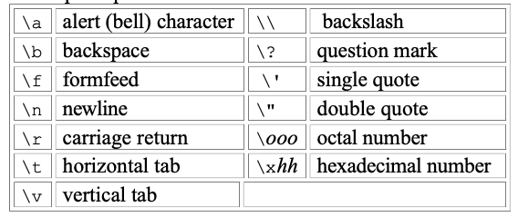
The character constant '\0' represents the character with value zero, the null character. '\0' is often written instead of 0 to emphasize the character nature of some expression, but the numeric value is just 0.
A constant expression is an expression that involves only constants. Such expressions may be evaluated at during compilation rather than run-time, and accordingly may be used in any place that a constant can occur, as in
#define MAXLINE 1000 char line[MAXLINE+1];
A string constant, or string literal, is a sequence of zero or more characters surrounded by double quotes, as in
"I am a string"
The quotes are not part of the string, but serve only to delimit it. The same escape sequences used in character constants apply in strings; \" represents the double-quote character. String constants can be concatenated at compile time:
"hello, " "world" /* is equivalent to */ "hello, world"
Technically, a string constant is an array of characters. The internal representation of a string has a null character '\0' at the end, so the physical storage required is one more than the number of characters written between the quotes. This representation means that there is no limit to how long a string can be, but programs must scan a string completely to determine its length. The standard library function strlen(s) returns the length of its character string argument s, excluding the terminal '\0'.
Be careful to distinguish between a character constant and a string that contains a single character: 'x' is not the same as "x". The former is an integer, used to produce the numeric value of the letter x in the machine's character set. The latter is an array of characters that contains one character (the letter x) and a '\0'.
There is one other kind of constant, the enumeration constant. An enumeration is a list of constant integer values, as in
enum boolean { NO, YES };
The first name in an enum has value 0, the next 1, and so on, unless explicit values are specified. If not all values are specified, unspecified values continue the progression from the last specified value.
enum escapes { BELL = '\a', BACKSPACE = '\b', TAB = '\t', NEWLINE = '\n', VTAB = '\v', RETURN = '\r' }; enum months { JAN = 1, FEB, MAR, APR, MAY, JUN, JUL, AUG, SEP, OCT, NOV, DEC }; /* FEB = 2, MAR = 3, etc. */
Enumerations provide a convenient way to associate constant values with names, an alternative to #define with the advantage that the values can be generated for you. Although variables of enum types may be declared, compilers need not check that what you store in such a variable is a valid value for the enumeration. Nevertheless, enumeration variables offer the chance of checking and so are often better than #defines. In addition, a debugger may be able to print values of enumeration variables in their symbolic form.
2.4 Declarations
All variables must be declared before use, although certain declarations can be made implicitly by content. A declaration specifies a type, and contains a list of one or more variables of that type, as in
int lower, upper, step; char c, line[1000];
Variables can be distributed among declarations in any fashion;
int lower; int upper; int step; char c; char line[10000];
The latter form takes more space, but is convenient for adding a comment to each declaration for subsequent modifications.
A variable may also be initialized in its declaration. If the name is followed by an equals sign and an expression, the expression serves as an initializer, as in
char esc = '\\'; int i = 0; int limie = MAXLINE+1; float eps = 1.0e-5;
What's meaning of the following sentences?
If the variable in question is not automatic, the initialization is done once only, conceptionally before the program starts executing, and the initializer must be a constant expression. An explicitly initialized automatic variable is initialized each time the function or block it is in is entered; the initializer may be any expression. External and static variables are initialized to zero by default. Automatic variables for which is no explicit initializer have undefined (i.e., garbage) values.
The qualifier const can be applied to the declaration of any variable to specify that its value will not be changed. For an array, the const qualifier says that the elements will not be altered.
const double e = 2.71828182845905; const char msg[] = "warning: ";
The const declaration can also be used with array arguments, to indicate that the function does not change that array:
int strlen(const char[]);
2.5 Arithmetic Operators
The binary arithmetic operators are +, -, *, /, and the modulus operator %. Integer division truncates any fractional part.
Arithmetic operators associate left to right.
2.6 Relational and Logical Operators
The relational operators are
> >= < <=
equality operators:
== !=
logical operators:
&& ||
Expressions connected by && or || are evaluated left to right, and evaluation stops as soon as the truth or falsehood of the result is known. Most C programs rely on these properties.
By definition, the numeric value of a relational or logical expression is 1 if the relation is true, and 0 if the relation is false.
The unary negation operator ! converts a non-zero operand into 0, and a zero operand in 1.
2.7 Type Conversions
When an operator has operands of different types, they are converted to a common type according to a small number of rules. In general, the only automatic conversions are those that convert a ``narrower'' operand into a ``wider'' one without losing information, such as converting an integer into floating point in an expression like f + i. Expressions that might lose information, like assigning a longer integer type to a shorter, or a floating-point type to an integer, may draw a warning, but they are not illegal.
A char is just a small integer, so chars may be freely used in arithmetic expressions.
The standard header <ctype.h> defines a family of functions that provides tests and conversions that independent of character set.
tolower(c) isdigit(c)
The definition of C guarantees that any character in the machine's standard printing character set will never be negative, so there characters will always be positive quantities in expressions. But arbitrary bit patterns stored in character variables may appear to be negative on some machines, yet positive on others. For portability, specify signed or unsigned if non-character data is to be stored in char variables.
Conversions take place across assignments; the value of the right side is converted to the type of the left, which is the type of the result.
Since an argument of a function call is an expression, type conversion also takes place when arguments are passed to functions. In the absence of a function prototype, char and short become int, and float becomes double.
Explicit type conversions can be forced in any expression, with a unary operator called a cast. In the construction
(type name) expression
the expression is converted to the named type. The precise meaning of a cast is as if the expression were assigned to a variable of the specified type, which is then used in inplace of the whole construction.
For example, the library routine sqrt expects a double argument, and will produce nonsense if inadvertently handled something else. (sqrt is declared in <math.h>.) So if n is an integer, we can use
sqrt((double) n);
to convert the value of n into double before passing it to sqrt.
Note that the cast produces the value of n in the proper type; n itself is not altered.
If arguments are declared by a function prototype, as the normally should be, the declaration causes automatic coercion of any arguments when the function is called.
double sqrt(double); /* coerces the integer 2 into the double value 2.0 without need for a cast. */ root2 = sqrt(2);
2.8 Increment and Decrement Operators
C provides two unusual operators for incrementing and decrementing variables. The increment operator ++ adds 1 to its operand, while the decrement operator – subtracts 1.
The unusual aspect is that ++ and -- may be used either as prefix operators (++n), or postfix operators (n++). In both cases, the effect is to increment n. But the expression ++n increments n before its value is used, while n++ increments n after its value has been used. This means that is a context where the value is being used, not just the effect, ++n and n++ are different.
If n is 5, then
x = n++;
sets x to 5, but
x = ++n;
sets x to 6. In both cases, n becomes 6. The increment and decrement operators can only be applied to variables; an expression like (i+j)++ is illegal.
In a context where no value is wanted, just the incrementing effect, as in
if (c == '\n') nl++;
prefix and posfix are the same.
2.9 Bitwise Operators
C provides six operators for bit manipulation; these may only be applied to integral operands, that is, char, short, int, and long, whether signed or unsigned.
& bitwise AND | bitwise inclusive OR ^ bitwise exclusive OR << left shift >> right shift ~ one's complement(unary)
Right shifting an unsigned quantity always fits the vacated bits with zero. Right shifting a signed quantity will fill with bit signs (``arithmetic shift'') on some machines and with 0-bits (``logical shift'') on others.
The unary operator ~ yields the one's complement of an integer; that is, it converts each 1-bit into a 0-bit and vice versa.
x = x & ~077
sets the last six bits of x to zero. Note that x & ~077 is independent of word length, and is thus preferable to, for example, x & 0177700, which assumes that x is a 16-bit quantity. The portable form involves no extra cost, since ~077 is a constant expression that can be evaluated at compile time.
2.10 Assignment Operators and Exmpressions
An expression such as
i = i + 2;
in which the variable on the left side is repeated immdediately on the right, can be written in the compressed from
i += 2;
The operator += is called assignment operator.
Most binary operators have a corresponding assignment operator op=, where op is one of
+ - * / % << >> & ^ |
If expr1 op expr2 are expressions, then
expr1 op= expr2;
is equivalent to
expr1 = (expr1) os (expr2)
except that expr1 is computed only once.
In all such expressions, the type of an assignment expression is the type of its left operand, and the value is the value after the assignment.
2.11 Conditional Expressions
conditional expression: "?:"
if (a > b) z = a; else z = b;
is equivalent to
z = (a > b) ? a : b;
The conditional expression often leads to succinct code.
/* prints n element of an array, 10 per line, with each column separated by one blank, and with each line (including the last) terminated by a newline. */ for (i = 0; i < n; i++) printf("%6d%c", a[i], (i%10==9 || i==n-1) ? '\n' : ' '); printf("You have %d items%s.\n", n, n==1 ? "" : "s");
2.12 Precedence and Order of Evaluation
PRECEDENCE AND ASSOCIATIVITY OF OPERATORS:
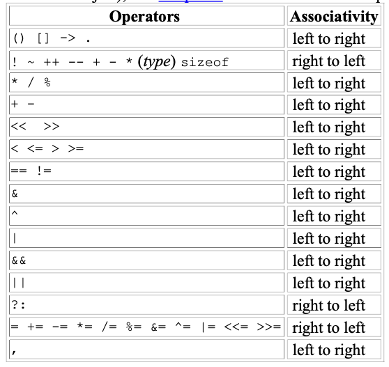
- Operators on the same line have the same precedence.
- Rows are in order of decreasing precedence.
- The "operator" () refers to function call.
- The operator -> and . are used to access members of structures
- * (indirection through a pointer)
- & (address of an object)
- Unary
& + -and*have higher precedence than the binary forms.
C, like most languages, does not specify the order in which the operands of an operator are evaluated. (The exceptions are &&, ||, ?: and ','.)
For example:
x = f() + g();
f may be evaluated before g or vice versa; thus if either f or g alters a variable on which the other depends, x can depend on the order of evaluation. Intermediate results can be stored in temporary variables to ensure a particular sequence.
Similary, the order in which function arguments are evaluated is not specified.
printf("%d %d\n", ++n, power(2, n)); /* WRONG */
can produce different results with different compilers, depending on whether n is incremented before power is called. The solution, of course, is to write
++n;
printf("%d %d\n", n, power(2, n));
Function calls, nested assignment statements, and increment and decrement operators cause ``side effects'' - some variable is changed as a by-product of the evaluation of an expression. In any expression involving side effects, there can be subtle dependencies on the order in which variables taking part in the expression are updated.
The moral is that writing code that depends on order of evaluation is a bad programming practice in any language. Naturally, it is necessary to know what things to avoid, but if you don't know how they are done on various machines, you won't be tempted to take advantage of a particular implementation.
3 Control Flow
The control-flow of a language specify the order in which computations are performed.
3.1 Statements and Blocks
An expression becomes a statement when it is followed by a semicolon, as in
x = 0; i++; printf(...);
In C, the semicolon is a statement terminator.
Braces { and } are used to group declarations and statements together into a compound statement, or block, so that they are syntactically equivalent to a single statement. There is no semicolon after the right brace that ends a block.
3.2 If-Else
if (expression) statement1 else statement2
Because the else part of an if-else is optional,there is an ambiguity when an else if omitted from a nested if sequence. This is resolved by associating the else with the closest previous else-less if.
if (n > 0) if (a > b) z = a; else z = b;
If that isn't what you want, braces must be used to force the proper association:
if (n > 0) { if (a > b) z = a; } else z = b;
it's a good idea to use braces when there are nested if s.
3.3 Else-If
if (expression) statement else if (expression) statement else if (expression) statement else statement
The expressions are evaluated in order; if an expression is true, the statement associated with it is executed, and this terminates the whole chain. The last else part handles the "none of the above" or default case where none of the other conditions is satisfied.
3.4 Switch
The switch statement is a multi-way decision that tests whether an expression matches one of a number of constant integer values, and branches accordingly.
switch (expression) { case const-expr: statements case const-expr: statements defalt: statements }
Each case is labeled by one or more integer-valued constants or constant expressions. If a case matches the expression value, execution starts at that case. All case expressions must be different. The case labeled default is executed if none of the other cases are satisfied. A default is optional; if it isn't there and if none of the cases match, no action at all takes place. Cases and the default clause can occur in any order.
#include <stdio.h> int main() /* count digits, white space, others */ { int c, i, nwhite, nother, ndigit[10]; nwhite = nother = 0; for (i = 0; i < 10; i++) ndigit[i] = 0; while ((c = getchar()) != EOF) { switch (c) { case '0': case '1': case '2': case '3': case '4': case '5': case '6': case '7': case '8': case '9': ndigit[c-'0']++; break; case ' ': case '\n': case '\t': nwhite++; break; default: nother++; break; } } printf("digits ="); for (i = 0; i < 10; i++) printf(" %d", ndigit[i]); printf(", white space = %d, other = %d\n", nwhite, nother); return 0; }
The break statement causes an immediate exit from the switch. Because cases serve just as labels, after the code for one case is done, execution falls through to the next unless you take explicit action to escape. break and return are the most common ways to leave a switch.
Falling through cases is a mixed blessing. On the positive side, it allows several cases to be attached to a single action. But it also implies that normally each case must end with a break to prevent falling through to the next. Falling through from one case to another is not robust, being prone to disintegration when the program is modified. With the exception of multiple labels for a single computation, fall-throughs should be used sparingly, and commented.
3.5 Loops - While and For
while (expression)
statement
for (expr1; expr2; expr3) statement // is equivalent to expr1; while (expr2) { statement expr3; }
Any of the three parts can be ommited, although the semicolons must retain. If expr1 or expr3 is omitted, ti is simply dropped from the expansion. If the test, expr2 is not present, it is taken as permanently true, so
for (;;)
{
...
}
is an "infinite" loop, presumably to be broken by other means, such as a break or return.
Whether to use while or for is largely a matter of personal preference.
When there is no initialization or re-innitialization, the while is most natural.
while ((c = getchar()) == ' ' || c == '\n' || c == '\t') ; /* skip while space characters */
The for is preferable when there is a simple initialization and increment since it keeps the loop control statements close together and visible at the top of the loop.
for (i = 0; i < n; i++)
....
The final C operator is the comma ",". A pair of expressions separated by a comma is evaluated left to right, and the type and value of the result are the type and value of the right operand.
#include <string.h> /* reverse: reverse string s in place */ void reverse(char s[]) { int c, i, j; for (i = 0; j = strlen(s)-1; i < j; i++, j--) { c = s[i]; s[i] = s[j]; s[j] = c; } }
The comma that separate function arguments, variables in declarations, etc., are not comma operators, and do not guarantee the left to right evaluation.
Comma operators should be used sparingly. The most suitable uses are for constructs strongly related to each other, as in the for loop in reverse, and in macros where a multistep computation has to be a single expression.
3.6 Loops - Do-While
do statement while (expression)
The statement is executed, then expression is evaluated. If it is true, statement is evaluated again, and so on.
3.7 Break and Continue
The break statement provides an early exit from for, while, and do, just as from switch. A break causes the innermost enclosing loop or switch to be exited immediately.
The continue statement causes the next iteration of the enclosing for, while or do loop to begin. In the while and do, this means that the test part is executed immediately; in the for, control passes to the increment step. The continue statement applies only to loops, not to switch. A continue inside a switch inside a loop causes the next loop iteration.
for (i = 0; i < n; i++) if (a[i] < 0) /* skip negative elements */ continue; ... /* do positive elements */
3.8 Goto and labels
C provides the infinitely-abusable goto statement, and labels to branch to. Formally, the goto statement is never necessary, and in practice it is almost always easy to write code without it.
Nevertheless, there are a few situations where goto may find a place. The most common is to abandon processing in some deeply nested structure, such as breaking out of two or more loops at once. The break statement cannot be used directly since it only exits from the innermost loop.
for (...) for (...) { ... if (disaster) goto error; } ... error: /* clean up the mess */
This organization is handy if the error-handling code is non-trivial, and if errors can occurs in several places.
A lable has the same form as a variable name, and is followed by a colon. It can be attached to any statement in the same function as the goto. The scope of a label is the entire function.
for (i = 0; i < n; i++) for (j = 0; j < m; j++) if (a[i] == b[i]) goto found; /* didn't find any commen element */ found: /* got one: a[i] == b[j] */
Code involving a goto can always be written without one, though perhaps at the price of some repeated tests or an extra variable.
found = 0; for (i = 0; i < n && !found; i++) for (j = 0; j < m && !found; j++) if (a[i] == b[j]) found = 1; if (found) /* got one: a[i-1] == b[j-1] */ ... else /* didn't find any common element */ ...
With a few exceptions like those cited here, code that relies on goto statements is generally harder to understand and to maintain than code without goto. goto statements should be used rarely, if at all.
Maybe used in operating system develepment.
4 Functions and Program Structure
Functions break large computing tasks into smaller ones, and enable people to build on what others have done instead of starting over from scratch. Appropriate functions hide details of operation from parts of the program that don't need to know about them, thus clarifying the whole, and easing the pain of making changes.
4.1 Basics of Functions
/* while (there's another line) if (the line contains the pattern) print it */ #include <stdio.h> #define MAXLINE 1000 /* maximum input line length */ int getline(char line[], int max); int strindex(char source[], char searchfor[]); char pattern[] = "ould"; /* pattern to search for */ /* find all lines matching pattern */ int main() { char line[MAXLINE]; int found = 0; while (getline(line, MAXLINE) > 0) if (strindex(line, pattern) >= 0) { printf("%s", line); found++; } return found; } /* getline: get line into s, return length */ int getline(char s[], int lim) { int c, i; i = 0; while (--lim > 0 && (c = getchar()) != EOF && c != '\n') s[i++] = c; if (c == '\n') s[i++] = c; s[i] = '\0'; return i; } /* strindex: return index of t in s, -1 if none */ int strindex(char s[], char t[]) { int i, j, k; for (i = 0; s[i] != '\0'; i++) { for (j = i, k = 0; t[k] != '\0' && s[j] == t[k]; j++, k++) ; if (k > 0 && t[k] == '\0') /* whole pattern matched */ return i; } return -1; }
Each function definition as the form
return-type function-name(argument declarations)
{
declarations and statements
}
Various parts may be absent; a minimal function is
dummy() {}
which does nothing and returns nothing. If the return type is omitted, int is assumed.
A program is just a set of definitions and functions. Communication between the functions is by arguments and values returned by the functions, and through external variables. The functions can occur in any order in the source file, and the source program can be split into multiple files, so long as no function is split.
The mechanics of how to compile and load a C program that resides on multiple source files vary from one system to the next. On the UNIX system, for example, the cc command does the job.
Suppose that the three functions are stored in three files called main.c, getline.c, and strindex.c.
cc main.c getline.c strindex.c
4.2 Functions Returning Non-integers
- The function itself must declare the type of value it returns.
- The calling routine most know the function returns a non-int value. (One way to ensure this is to declare the function explicitly in the calling routine.)
/* stdlib.h includes an atof */ #include <ctype.h> /* atof: convert string s to double */ double atof(char s[]) { double val, power; int i, sign; for (i = 0; isspace(s[i]); i++) /* skip white space */ ; sign = (s[i] == '-') ? -1 : 1; if (s[i] == '+' || s[i] == '-') /* skip sign */ i++; for (val = 0.0; isdigit(s[i]); i++) val = 10.0 * val + (s[i] - '0'); if (s[i] == '.') i++; for (power = 1.0; isdigit(s[i]); i++) { val = 10.0 * val + (s[i] - '0'); power *= 10; } return sign * val / power; }
#include <stdio.h> #define MAXLINE 1000 /* rudimentary calculator */ int main() { double sum, atof(char []); char line[MAXLINE]; int getline(char line[], int max); sum = 0; while (getline(line, MAXLINE) > ) printf("%\tg\n", sum += atof(line)); return 0; }
The function atof must be declared and defined consistently. If atof itself and the call to it in main have inconsistent types in the same source file, the error will be detected by the compiler. But if (as is more likely) atof were compiled separately, the mismatch would not be detected, atof would return a double that main would treat as an int, and meaningless answers would result.
The reason a mismatch can happen is that if there is no function prototype, a function is implicitly declared by its first appearance in an expression, such as
sum += atof(line)
If a name that has not been previously declared occurs in an expression and is followed by a left parentheses, it is declared by context to be a function name, the function is assumed to return an int, and nothing is assumed about its arguments.
NOTE:
This special meaning of the empty argument list is intended to permit older C programs to compile with new compilers. But it's a bad idea to use it with new C programs. If the function takes arguments, declare them; if it takes no arguments, use void.
4.3 External Variables
A C program consists of a set of external objects, which are either variables or functions. The adjective ``external'' is used in contrast to ``internal'', which describes the arguments and variables defined inside functions. External variables are defined outside of any function, and are thus potentionally available to many functions. Functions themselves are always external, because C does not allow functions to be defined inside other functions.
Because external variables are globally accessible, they provide an alternative to function arguments and return values for communicating data between functions.
If a large number of variables must be shared among functions, external variables are more convenient and efficient than long argument lists. However, this reasoning should be applied with some caution, for it can have a bad effect on program structure, and lead to programs with too many data connections between functions.
External variables are also useful because of their greater scope and lifetime. Automatic variables are internal to a function; they come into existence when the function is entered, and disappear when it is left. External variables, on the other hand, are permanent, so they can retain values from one function invocation to the next.
4.4 Scope Rules
The functions and external variables that make up a C program need not all be compiled at the same time; the source text of the program may be kept in several files, and previously compiled routines may be loaded from libraries.
Questions:
- How are declarations written so that variables are properly declared during compilation?
- How are declarations arranged so that all the pieces will be properly connected when the program is loaded?
- How are declarations organized so there is only one copy?
- How are external variables initialzed?
The scope of a name is the part of the program within which the name can be used.
For an automatic variable declared at the beginning of a function, the scope is the function in which the name is declared.
The scope of an external variable or a function lasts from the point at which it is declared to the end of the file being compiled.
If an external variable is to be referred to before it is defined, or if it is defined in a different source file from the one where it is being used, then an extern declaration is mandatory.
declaration vs definition:
A declaration announces the properties of a variable (primarily its type); a definition also causes storage to be set aside.
If the lines
int sp; double val[MAXVAL];
appear outside of any function, they define the external variables sp and val, cause storage to be set aside, and also serve as the declaration for the rest of that source file.
On the hand hand, the lines
extern int sp; extern double val[];
declare for the rest of the source file that sp is an int and that val is a double array (whose size is determined elsewhere), but they do not create the variable or reserve storage for them.
There must be only one definition of an external variable among all the files that make up the source program; other files may conatain extern declarations to access it. Array size must be specified with the definition, but are optional with an extern declaration.
Initialization of a external variable goes only with the definition.
4.5 Header Files
As the program getting bigger and bigger, the program will goes into serveral source files. There is one thing to worry about - the definitions and declarations shared among files. As much as possible, we want to centralize this, so that there is only one copy to get and keep right as the program evolves. Accordingly, we will place this common material in a header file, which will be included as necessary.
There is a tradeoff between the desire that each file have access only to the information it needs for its job and the practical reality that it is harder to maintain more header files. Up to some moderate program size, it is probably best to have one header file that contains everything that is to be shared between any two parts of the program. For a much larger program, more organization and more headers would be needed.
4.6 Static Variables
The static declaration, applied to an external variable or function, limits the scope of that object to the rest of the source file being compiled.
Static storage is specified by prefixing the normal declaration with the word static. If the two routines and the two variables are compiled in one file, as in
static char buf[BUFSIZE]; /* buffer for ungetch */ static int bufp = 0; /* next free position in buf */ int getch(void) { ... } void ungetch(int c) { ... }
then no other routine will be able to access buf and bufp, and those names will not conflict with the same names in other files of the same program.
The external static declaration is most often used for variables, but it can be applied to functions as well. Normally, function names are global, visible to any part of the entire program. If a function is declared static, however, its name is invisible outside of the file in which it is declared.
The static declaration can also be applied to internal variables. Internal static variables are local to a particular function just as automatic variables are, but unlike automatics, they remain in existence rather than coming and going each time the function is activated. This means that internal static variables provide private, permanent storage within a single function.
4.7 Register Variables
A register declaration advises the compiler that the variable in question will be heavily used. The idea is that register variables are to be placed in machine registers, which may result in smaller and faster programs. But compilers are free to ignore the advice.
register int x; register char c;
The register declaration can only be applied to automatic variables and to the formal parameters of a function.
f(register unsigned m, register long n) { register int i; ... }
In practice, there are restrictions on register variables, reflecting the realities of underlying hardware. Only a few variables in each function may be kept in registers, and only certain types are allowed. It is not possible to take the address of a register variable, regardless of whether the variable is actually placed in a register. The specific restrictions on number and types of register variables vary from machine to machine.
4.8 Block Structure
C is not a block-strucutred language, because functions may not be define within other functions. On the other hand, variables can be defined in a block-strucutred fashion within a function.
Declarations of variables (including initializations) may follow the left brace that introduces any compound statement, not just the one that begins a function. Variables declared in this way hide any identically named variables in outer blocks, and remain in existence until the matching right brace. For example, in
if (n > 0) { int i; /* declare a new i */ for (i = 0; i < n; i++) ... }
the scope of the variable i is the ``true'' branch of the if; this i is unrelated to any i outside the block.
Automatic variables, including formal parameters, also hide external variables and functions of the same name.
int x; int y; f(double x) { double y; }
then within the function f, occurrences of x refer to the parameter, which is a double; outside f, they refer to the external int.
4.9 Initialization
[defualt values]
In the absence of explicit initialization, external and static variables are guaranteed to be initialized to zero; automatic and register variables have undefined (i.e., garbage) initial values.
[permited expression]
For external and static variables, the initializer must be a constant expression; the initialization is done once, conceptionally before the program begins execution. For automatic and register variables, the initializer is not restricted to being a constant: it may be any expression involving previously defined values, even function calls.
Arithmetic types and pointer types are collectively called scalar types. Array and structure types are collectively called aggregate types.
Scalar variables may be initialized when they are defined, by following the name with an equals sign and an expression:
int x = 1; char squota = '\''; long day = 1000L * 60L * 60L * 24L; /* milliseconds/day */
An array may be initialized by following its declaration with a list of initializers enclosed in braces and separated by commas.
int days[] = { 31, 28, 31, 30, 31, 30, 31, 31, 30, 31, 30, 31 }
When the size of the array is omitted, the compiler will compute the length by counting the initializers, of which there are 12 in this case.
If there are fewer initializers for an array than the specified size, the others will be zero for external, static and automatic variables. It is an error to have too many initializers. There is no way to specify repetition of an initializer, nor to initialize an element in the middle of an array without supplying all the preceding values as well.
Character arrays are a special case of initialization; a string may be used instead of the braces and commas notation:
char pattern = "ould";
is shorthand for the longer but equivalent
char pattern[] = { 'o', 'u', 'l', 'd', '\0' };
4.10 Recursion
Recursion may provide no saving in storage, since somewhere a stack of the values being processed must be maintained. Nor will it be faster. But recursive code is more compact, and often much easier to write and understand than the non-recursive equivalent. Recursion is especially convenient for recursively defined data structures like trees.
4.11 The C preprocessor
C provides certain language facilities by means of a preprocessor, which is conceptionally a separate first step in compilation.
- #include
- to include contents of a file during compilation
- #define
- to replace a token by an arbitrary sequence of characters
- conditional compilation
- macros with arguments
4.11.1 File Inclusion
File inclusion makes it easy to handle collections of #defines and declarations (among other things).
#include "filename" #include <filename>
is replaced by the contents of the file filename. If the filename is quoted, searching for the file typically begins where the source program was found; if it is not found there, or if the name is enclosed in < and >, searching follows an implementation-defined rule to find the file.
#include is the preferred way to tie the declarations together for a large program. It guarantees that all the source files will be supplied with the same definitions and variable declarations, and thus eliminates a particularly nasty kind of bug. Naturally, when an included file is changed, all files that depend on it must be recompiled.
4.11.2 Macro Substitution
A definition has the form
#define name relacement_text
It calls for a macro substitution of the simplest kind - subsequent occurrences of the token name will be replaced by the replacement_text. The name in a #define has the same form as a variable name; the replacement text is arbitrary. The scope of a name defined with #define is from its point of definition to the end of the source file being compiled.
Any name may be defined with any replacement text. For example
#define forever for (;;) /* infinite loop */
It is also possible to define macros with arguments, so the replacement text can be different for different call of the macros.
#define max(A, B) ((A) > (B) ? (A) : (B))
This macro serve for any data type; there is no need for different kinds of max for different data types, as there would be with functions.
If you examine the expansion of max, you will notice some pitfalls. The expressions are evaluated twice; this is bad if they involve side effects like increment operators or input and output.
For instance
max(i++, j++) /* WRONG */
will increment the larger twice.
Some care also has to be taken with parentheses to make sure the order of evaluation is perserved; consider what happens when the macro
#define square(x) x * x /* WRONG */
is invoked as square(z+1).
z + 1 * z + 1
Nonetheless, macros are valuable. One practical example comes from <stdio.h>, in which getchar and putchar are often defined as macros to avoid the run-time overhead of a function call per character processed. The functions in <ctype.h> are also usually implemented as macros.
Names may be undefined with #undef, usually to ensure that a routine is really a function, not a macro:
#undef getchar int getchar(void) { ... }
Formal parameters are not replaced within quoted strings. If however, a parameter name is preceded by a # in the replacement text, the combination will be expanded into a quoted string with the parameter replaced with the actual argument.
#define dprint(expr) printf(#expr " = %g\n", expr)
When this is invoked, as in
dprint(x/y)
the macro is expanded into
printf("x/y" " = &g\n", x/y);
and the strings are concatenated, so the effect is
printf("x/y = &g\n", x/y);
Within the acutual argument, each " is replace by a \" and each \ by \\, so the result is a legal string constant.
4.11.3 Conditional Inclusion
It is possible to control preprocessing itself with conditional statements that are evaluated during preprocessing. This provides a way to include code selectively, depending on the value of conditions evaluated during compilation.
The #if line evaluates a constant integer expression (which may not include sizeof, casts, or enum constants). If the expression is non-zero, subsequent lines until an #endif or #elif or #else are included. The expression defined(name) in a #if is 1 if the name has been defined, and 0 otherwise.
For example, to make sure that the contents of a file hdr.h are included only once, the contents of the file are surrounded with a conditional like this:
#if !defined(HDR) #define HDR /* contents of hdr.h go here */ #endif
The first inclusion of hdr.h defines the name HDR; subsequent inclusions will find the name defined and skip down to the #endif.
#if SYSTEM == SYSV #define HDR "sysv.h" #elif SYSTEM == BSD #define HDR "bsd.h" #elif SYSTEM == MODOS #define HDR "modos.h" #else #define HDR "default.h" #endif #include HDR
This sequence tests the name SYSTEM to decide which version of a header to include.
The #ifdef and #ifndef lines are spcialized form that test whether a name is defined.
#ifndef HDR #define HDR /* contents of hdr.h go here */ #endif
5 Pointers and Arrays
A pointer is a variable than contains the address of a variable.
Pointers are much used in C, partly because they are sometimes the only way to express a computation, and partly because they usually lead to more compact and efficient code than that can be obtained in other ways.
Pointers and arrays are closely related.
5.1 Pointers and Addresses
A typical machine has an array of consecutively numbered or addressed memory cells that may be manipulated individually or in contiguous groups. One common situation is that any byte can be a char, a pair of one-byte cells can be treated as a short integer, and four adjacent bytes form a long. A pointer is a group of cells (often two or four) that can hold an address. So if c is a char and p is a pointer that points to it, we could represent the situation this way:
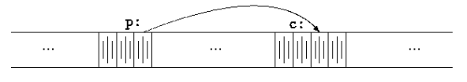
The unary operator & gives the address of an object, so the statement
p = &c;
assigns the address of c to the variable p, and p is said to "point to" c. The & operator only applies to objects in memory: variables and array elements. It cannot be applied to expressions, constants, or register variables.
The unary operator * is the indirection or dereferencing operator; when applied to a pointer, it access the object the pointer points to.
Suppose that x and y are integers and ip is a pointer to int.
int x = 1, y = 2, z[10]; int *ip; /* ip is a pointer to int */ ip = &x; /* ip now points to x */ y = *ip; /* y is now 1 */ *ip = 0; /* x is now 0 */ ip = &z[0]; /* ip is now points to z[0] */
The declaration of the pointer ip,
int *ip;
is intended as a mnemonic; it says that the expression *ip is an int. The syntax of the declaration for a variable mimics the syntax of expressions in which the variable might appear. This reasoning applies to function declaration as well.
For example,
double *dp, atof(char *);
says that in an expression *dp and atof(s) have values of double, and that the argument of atof is a pointer to char.
The parameter name are omitted, just as in
int getop(char []);
A pointer is constrained to point to a particular kine of object: every pointer points to a specific data type. (There is one exception: a "pointer to void" is used to hold any type of pointer but cannot be dereferenced itself.)
The unary operator * and & bind more tightly than arithmetic operators.
y = *ip + 1
takes whatever ip points at, adds 1, and assign the result to y.
*ip += 1
imcrements what ip points to, as do
++*ip
and
(*ip)++
The parentheses are necessary in this last example; without them, the expression would increment ip instead of what it points to, because unary operators line * and ++ associate right to left.
Since pointers are variables, they can be used without dereferencing.
For example, if iq is another pointer to int,
iq = ip
copies the contents of ip into iq, thus making iq point to whatever ip pointed to.
5.2 Pointers and Function Arguments
Since C passes arguments to functions by value, there is no direct way for the called function to alter a variable in the calling function.
For instance, a sorting routine might exchange two out-of-order arguments with a function called swap. It is not enough to write
swap (a, b);
where swap function is defined as
void swap(int x, int y) /* WRONG */ { int temp; temp = x; x = y; y = temp; }
Because of call by value, swap can't affect the arguments a and b in the routine that called it. The function above swaps copies of a and b.
The way to obtain the desired effect is for the calling program to pass pointers to the values to be changed:
swap(&a, &b);
Since the operator & produces the address of a variable, &a is a pointer to a. In swap itself, the parameters are declared as pointers, and the operands are accessed indirectly through them.
void swap(int *xp, int *yp) /* interchange *xp and *yp */ { int temp; temp = *xp; *xp = *yp; *yp = temp; }
Pointer arguments enable a function to access and change objects in the function that called it.
5.3 Pointers and Arrays
In C, there is a strong relationship between pointers and arrays, strong enough that pointers and arrays should be discussed simutaneously.
[pointer arithmetic]
If pa points to a particular element of an array, then by definition pa+1 points to the next element, pa+i points to i elements after pa, and pa-i points to element before. These remarks are true regardless of the type or size of the variables in the array. The meaning of "adding 1 to a pointer", and by extension, all pointer arithmetic, is that pa+1 points to the next object, and pa+1 points to the i-th object beyond pa.
The correspondence between indexing and pointer arithmetic is very close. By definition, the value of a variable or expression of type array is the address of element zero of the array. Thus after the assignment
pa = &a[0];
pa and a have identical values. Since the name of an array is a synonym for the location of the initial element, The assignment can also be written as
pa = a;
A reference to a[i] can also be written as *(a+i). In evaluating a[i], C converts it to *(a+i) immediately; the two forms are equivalent. Applying the operator & to both parts of this equivalence, it follows that &a[i] and a+i are also identical: a+i is the address of the i-th element beyond a. As the other side of this coin, if pa is a pointer, expressions might use it with a subscript; pa[i] is identical to *(pa+i). In short, an array-and-index expression is equivalent to one written as a pointer and offset.
There is one difference between an array name and a pointer that must be kept in mind. A pointer is a variable, so pa=a and pa++ are legal. But an array name is not a variable; constructions like a=pa and a++ are illegal.
[pass value]
When an array name is passed to a function, what is passed is the location of the initial element. Within the called function, this argument is a local variable, and so an array name parameter is a pointer, that is, a variable containing an address.
/* strlen: return length of string s */ int strlen(char *s) { int n; for (n = 0; *s != '\0'; s++) n++; return n; }
Since s is a pointer (copied), incrementing it is perfectly legal; s++ has no effect on the character string in the function that called strlen, but merely increments strlen's private copy of the pointer. That means that calls like
strlen("hello, world"); /* string constant */ strlen(array); /* char array[100]; */ strlen(ptr); /* char *ptr; */
all work.
As formal parameters in a function definition,
char s[];
and
char *s;
are equivalent; we prefer the latter because it says more explicitly that the variable is a pointer.
It is possible to pass part of an array to a function, by passing a pointer to the beginning of the subarray. For example, if a is an array,
f(&a[2])
and
f(a+2)
both pass to the function f the address of the subarray that starts at a[2].
5.4 Address Arithmetic
If p is a pointer to some element of an array, then p++ increments p to point to the next element, and p+=i increments it to point i elements beyond where it currently does. These and similar constructions are the simples forms of pointer or address arithmetic.
C is consistent and regular in its approach to address arithmetic: its integration of pointers, arrays, and address arithmetic is one of the strengths of the language.
C guarantees that zero is never a valid address for data. Pointers and integers are not interchangeable. Zero is the sole exception: the constant zero may be assigned to a pointer, and a pointer may be compared with the constant zero. The symbolic constant NULL is often used in place of zero, as a mnemonic to indicate more clearly that this is a special value for a pointer. NULL is defined in <stdio.h>.
if (allocbuf + ALLOCSIZE - allocp >= n) { /* it fits */
and
if (p >= allocbuf && p < allocbuf + ALLOCSIZE)
show serveral important facets of pointer arithmetic.
First, pointer may be compared under certain circumstances. If p and q point to members of the same array, then relations like \(==, !=, <, >=\), etc., work properly. For example,
p < q
is true if p points to an earlier element of the array than q does. Any pointer can be meaningfully compared for equality or inequality with zero. But the behavior is undefined for arithmetic or comparisons with pointers that do not point to members of the same array. (There is one exception: the address of the first element past the end of an array can be used in pointer arithmetic.)
Second, a pointer and an integer may be added or subtracted. The construction
p + n
means the address of the n-th object beyond the one p currently points to.
Pointer arithmetic is consistent. (scales according to the size of the object that the pointer points to)
The valid pointer operations are:
- assignment of pointers of the same type
- adding or substrcting a pointer and an integer
- subtracting or comparing tow pointers to members of the same array
- assigning or comparing to zero
All other pointer arithmetic is illegal.
5.5 Character Pointers and Functions
A string constant, written as
"I am a string"
is an array of characters. In the internal representation, the array is terminated with the null character '\0' so that programs can find the end. The length in storage is thus one more than the number of characters between the double quotes.
printf("hello, world\n");
When a character string like this appears in a program, access to it is through a character pointer; printf receives a pointer to the beginning of the character array. That is, a string constant is accessed by a pointer to its first element.
If pmessage is declared as
char *pmessage;
Then the statement
pmessage = "now is the time";
assigns to pmessage a pointer to the character array. This is not a string copy; only pointers are involved. C does not provide any operators for processing an entire string of characters as a unit.
There is an important difference between these definitions:
char amessage[] = "now is the time"; /* an array */ char *pmessage = "now is the time"; /* a pointer */
amessage is an array, just big enough to hold the sequence of characters and '\0' that initializes it. Individual characters within the array may be changed bug amessage will always refer to the same storage. On the other hand, pmessage is a pointer, initialized to point to a string constant; the pointer may subsequently be modified elsewhere, but the result is undefined if you try to modify the string contents.
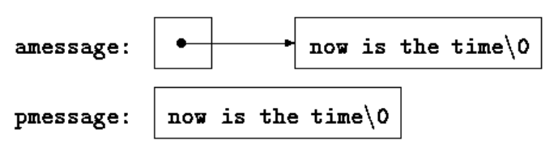
5.6 Pointer Arrays: Pointers to Pointers
Since pointers are variables themselves, they can be stored in arrays just as other variables can.
5.7 Multi-dimentional Arrays
C provides rectangular multi-dimensional arrays, although in practice they are much less used than arrays of pointers.
static char daytab[2][13] = { {0, 31, 28, 31, 30, 31, 30, 31, 31, 30, 31, 30, 31}, {0, 31, 29, 31, 30, 31, 30, 31, 31, 30, 31, 30, 31} }; /* day_of_year set day of year from month and day */ int day_of_year(int year, int month, int day) { int i, leap; leap = year % 4 == 0 && year % 100 != 0 || year % 400 == 0; for (i = 1; i < month; i++) day += daytab[leap][i]; return day; } /* month_day: set month, day from day of year */ void month_day(int year, int yearday, int *pmonth, int *pday) { int i, leap; leap = year % 4 == 0 && year % 100 != 0 || year % 400 == 0; for (i = 1; yearday > daytab[leap][i]; i++) yearday -= daytab[leap][i]; *pmonth = i; *pday = yearday; }
An array is initialized by a list of initializers in braces; each row of a two-dimensional array is initialized by a corresponding sub-list.
If a two-dimensional array is to be passed to a function, the parameter declaration in the function must include the number of columns; the number of rows is irrelevant, since what is passed is a pointer to an array of rows, where each row is an array of 13 ints. In this particular case, it is a pointer to objects that are arrays of 13 ints. More generally, only the first dimension (subscript) of an array is free; all the others have to be specified.
f(int daytab[2][13]) {...} f(int daytab[][13]) {...} f(int (*daytab)[13]) {...}
5.8 Initialization of Pointer Arrays
/* month_name: return name of n-th month */ char *month_name(int n) { static char *name[] = { "Illegal month", "January", "February", "March", "April", "May", "June", "July", "August", "September", "October", "November", "December" }; return (n < 1 || n > 12) ? name[0] : name[n]; }
5.9 Pointers vs. Multi-dimensional Arrays
int a[10][20]; int *b[10];
a[3][4] and b[3][4] are both syntactically legal references to a single int. But a is a true two-dimensional array: 200 int-sized locations have been set aside, and the conventional rectangular subscript calculation \(20 \times rwo + col\) is used to find the element a[row,col]. For b, however, the definition only allocates 10 pointers and does not initialize them; initialization must be done explicitly, either statically or with code. Assuming that each element of b does point to a twenty-element array, then there will be 200 ints set aside, plus ten cells for the pointers. The important advantage of the pointer array is that the rows of the array may be of different lengths.
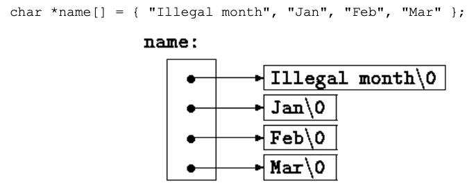
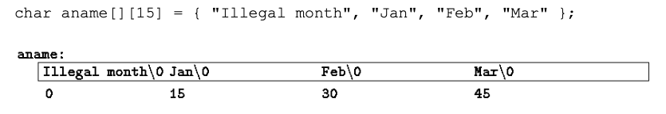
5.10 Command-line Arguments
When main is called, it is called with two arguments. The first (conventionally called argc, for argument count) is the number of command-line arguments the program was invoked with; the second (argv, for argument vector) is a pointer to an array of character strings that contain the arguments, one per string.
By convention, argv[0] is the name by which the program was invoked, so argc is at least 1.
echo hello, world
argc is 3, and argv[0], argv[1], and argv[2] are "echo", "hello,", and "world" respectively. The standard requires that argv[argc] be a null pointer.
5.11 Pointers to Functions
In C, a function itself is not a variable, but it is possible to define pointers to functions, which can be assigned, placed in arrays, passed to functions, returned by functions, and so on.
#include <stdio.h> #include <string.h> #define MAXLINES 5000 /* max #lines to be sorted */ char *lineptr[MAXLINES]; /* pointers to text lines */ int readlines(char *lineptr[], int nlines); void writelines(char *lineptr[], int nlines); void qsort(void *lineptr[], int left, int right, int (*comp)(void *, void *)); int numcmp (char *, char *); /* sort input lines */ int main(int argc, char *argv[]) { int nlines; /* number of input lines read */ int numberic = 0; /* 1 if number sort */ if (argc > 1 && strcmp(argv[1], "-n") == 0) numeric = 1; if ((nlines = readlines(lineptr, MAXLINES)) >= 0) { qsort((void**) lineptr, 0, nlines-1, (int (*) (void*, void*)) (numberic ? numcmp : strcmp)); writelines(lineptr, nlines); return 0; } else { printf("input too big to sort\n"); return 1; } }
In the call to qsort, strcmp and numcmp are address of functions. Since they are known to be functions, the & is not necessary, in the same way that it it not needed before any array name.
The generic pointer type void * is used for the pointer arguments. Any pointer can be cast to void * and back again without loss of information, so we can call qsort by casting arguments to void *.
/* qsort: sort v[left]...v[right] into increasing order */ void qsort(void *v[], int left, int right, int (*comp)(void *, void *)) { int i, mid; void swap(void *v[], int, int); if (left >= right) return; swap(v, left, (left + right)/2); mid = left; for (i = left+1; i <= right; i++) if ((*comp)(v[i], v[left]) < 0) swap(v, ++mid, i); swap(v, left, mid); qsort(v, left, mid-1, comp); qsort(v, mid+1, right, comp); }
*comp is the function, and
(*comp)(v[i], v[left])
is the call to it. The parentheses are needed so the components are correctly associated; without them,
int *comp(void *, void *) /* WRONG */
says the comp is a function returning a pointer to an int, which is very different.
5.12 Complicated Declarations
dcl is the more complex. It converts a C declaration into a word description.
dcl: optional *'s direct-dcl
direct-dcl name
(dcl)
direct-dcl()
direct-dcl[optional size]
In words, a dcl is a direct-dcl, perhaps preceded by *'s. A direct-dcl is a name, or a parenthesized dcl, or a direct-dcl followed by parentheses, or a direct-dcl followed by brackets with an optional size.
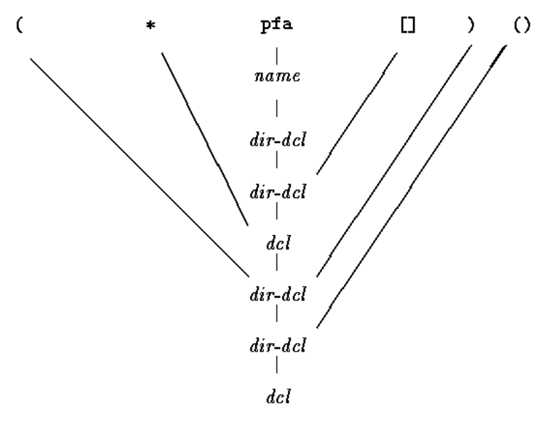
The heart of the dcl program is a pair of functions, dcl and dirdcl, that parse a declaration according to this grammar. Because the grammar is recursively defined, the functions call each other recursively as they recognize pieces of a declaration; the program is called a recursive-descent parser.
6 Structures
A structure is a collection of one or more variables, possibly of different types, grouped together under a single name for convenient handling. Structures help to organize complicated data, particularly in large programs, because they permit a group of related variables to be treated as a unit instead of as separate entities.
6.1 Basics of Structures
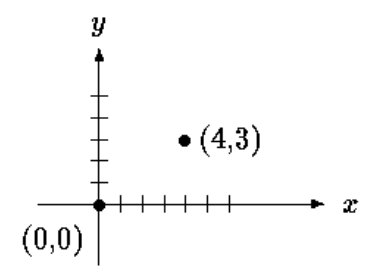
struct point { int x; int y; }
The keyword struct introduces a structure declaration, which is a list of declarations enclosed in braces. An optional name called a structure tag may follow the word struct (as with point here). The tag names this kind of structure, and can be used subsequently as a shorthand for the part of the declaration in braces.
The variables named in a structure are called members. A structure member or tag and an ordinary (i.e., non-member) variable can have the same name without conflict, since they can always be distinguished by context.
A struct declaration defines a type. The right brace that terminates the list of members may be followed by a list of variables, just as for any basic type. That is,
struct { ... } x, y, z;
is syntactically anologous to
int x, y, z;
A structure declaration that is not followed by a list of variables reserves no storage; it merely describes a template or shape of a structure. If the declaration is tagged, however, the tag can be used later in definitions of instances of the structure.
struct point pt;
defines a variable pt which is a structure of type struct point.
A structure can be initialized by following its definition with a list of initializers, each a constant expression, for the members:
struct maxpt = { 320, 200 };
An automatic structure may also be initialized by assignment or by calling a function that returns a structure of the right type.
A member of a particular structure is referred to in an expression by a construction of the form
structure-name.member
printf("%d,%d", pt.x, pt.y);
Structures can be nested.
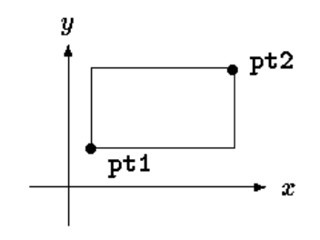
struct rect { struct point pt1; struct point pt2; }; struct rect screen; printf("%d", screen.pt1.x);
6.2 Structures and Functions
The only legal operations on a structure are copying it or assigning to it as a unit, taking its address with &, and accessing its members. Copy and assignment include passing arguments to functions and returning values from functions as well. Structures may not be compared. A structure may be initialized by a list of constant member values; an automatic structure may also be initialized by an assignment.
If a large structure is to be passed to a function, it is generally more efficient to pass a pointer than to copy the whole structure. Structure pointers are just like pointers to ordinary variables. The declaration
struct point *pp;
says that pp is a pointer to a structure of type struct point.
struct point origin, *pp; pp = &origin; printf("origin is (%d,%d)\n", (*pp).x, (*pp).y);
The parentheses are necessary in (*pp).x because the precedence of the structure member operator . is higher then *.
Pointers to structures are so frequently used that an alternative notation is provided as a shorthand. If p is a pointer to a structure, then
p->mumber-of-structure
refers to the particular member.
printf("origin is (%d,%d)\n", pp->x, pp->y);
Both . and -> associate from left to right, so if we have
struct rect r, *rp = &r;
then these four expressions are equivalent:
r.pt1.x rp->pt1.x (r.pt1).x (rp->pt1).x
The structure operators . and ->, together with () for function calls and [] for subscripts, are at the top of the precedence hierarchy and thus bind very tightly.
struct { int len; char *str; } *p;
++p->len
increments len, not p.
*p->str
fetches whatever str points to;
*p->str++
increments str after accessing whatever it points to.
*p++->str
increments p after accessing whatever str points to.
6.3 Arrays of Structures
Consider writing a program to count the occurrences of each C keyword. We need an array of character strings to hold the names, and an array of integers for the counts. One possibility is to use two parallel arrays, keyword and keycount, as in
char *keyword[NKEYS]; int keycount[NKEYS];
But the very fact that the arrays are parallel suggests a different organization, an array of structures. Each keyword is a pair:
char *word; int count;
and there is an array of pairs.
struct key { char *word; int count; } keytab[NKEYS];
declares a structure type key, defines an array keytab of structures of this type, and sets aside storage for them.
Since the structure keytab contains a constant set of names, it is easiest to make it an external variable and initialize it once and for all when it is defined.
struct key { char *word; int count; } keytab[] = { "auto", 0, "break", 0, "case", 0, "char", 0, "const", 0, "continue", 0, "default", 0, /* ... */ "unsigned", 0, "void", 0, "volatile", 0, "while", 0 };
The initializers are listed in pairs corresponding to the structure members. It would be more precise to enclose the initializers for each "row" or structure in braces, as in
{ "auto", 0 },
{ "break", 0 },
...
but inner braces are not necessary when the initializers are simple variables or character strings, and when all are present.
(for NKEYS)
The size of the array is completely determined at compile time. The size of the array is the size of one entry times the number of entries, so the number of entries is just
C provides a compile-time unary operator called sizeof that can be used to compute the size of any object. The expressions
sizeof object // and sizeof (typename)
yield an integer equal to the size of the specified object or type in bytes. (Strictly, sizeof produces an unsigned integer value whose type, size_t, is defined in the header <stddef.h>.)
#define NKEYS (sizeof keytab / sizeof(struct key))
A sizeof can not be used in a #if line, because the preprocessor does not parse type names. But the expression in the #define is not evaluated by the preprocessor, so the code here is legal.
#include <stdio.h> #include <ctype.h> #include <string.h> #define MAXWORD 100 struct key { char *word; int count; } keytab[] = { "auto", 0, "break", 0, "case", 0, "char", 0, "const", 0, "continue", 0, "default", 0, "do", 0, "double", 0, "else", 0, "enum", 0, "extern", 0, "float", 0, "for", 0, "goto", 0, "if", 0, "inline", 0, "int", 0, "long", 0, "register", 0, "restrict ", 0, "return", 0, "short", 0, "signed", 0, "sizeof", 0, "static", 0, "struct", 0, "switch", 0, "typedef", 0, "union", 0, "unsigned", 0, "void", 0, "volatile", 0, "while", 0 }; #define NKEYS (sizeof keytab / sizeof(struct key)) int getword(char *, int); int binsearch(char *, struct key *, int); /* count C keywords */ int main(void) { int n; char word[MAXWORD]; while (getword(word, MAXWORD) != EOF) if (isalpha(word[0])) if ((n = binsearch(word, keytab, NKEYS)) >= 0) keytab[n].count++; for (n = 0; n < NKEYS; n++) if (keytab[n].count > 0) /* only print keyword with count > 0 */ printf("%4d %s\n", keytab[n].count, keytab[n].word); return 0; } /* binsearch: find word in tab[0]..tab[n-1] */ int binsearch(char *word, struct key tab[], int n) { int cond; int low, high, mid; low = 0; high = n - 1; while (low <= high) { mid = (low + high) / 2; if ((cond = strcmp(word, tab[mid].word)) < 0) high = mid -1; else if (cond > 0) low = mid + 1; else return mid; } return -1; } /* getword: get next word or character from input */ int getword(char *word, int lim) { int c, getch(void); void ungetch(int); char *w = word; while (isspace(c =getch())) ; if (c != EOF) *w++ = c; if (!isalpha(c)) { *w = '\0'; return c; } for ( ; --lim > 0; w++) if (!isalnum(*w = getch())) { ungetch(*w); break; } *w = '\0'; return word[0]; }
6.4 Pointers to Structures
Note:
The addition of pointers is illeage.
Subtraction is legal.
6.5 Self-referential Structure
struct tnode { /* the tree node */ char *word; /* points to the text */ int count; /* number of occurrences */ struct tnode *left; /* left child */ struct tnode *lright; /* right child */ }
struct t { ... structs*p; /*ppointstoans*/ }; struct s { ... structt*q; /*qpointstoat*/ };
Note:
The alloc does not guarantee any particular alignment.
The standard library function malloc, which does. <stdli.h>
malloc returns a pointer to void, then explicitly coerce the pointer into the desired type with a cast.
6.6 Table Lookup
6.7 Typedef
C provides a facility called typedef for creating new data type names.
typedef int Length;
makes the name Length a synonym for int. The type Length can be used in declarations, casts, etc., in exactly the same ways that the int type can be:
Length len, maxlen; Length *lengths[];
typedef char *String; String p, lineptr[MAXLINES], alloc(int); int strcmp(String,String); p = (String) malloc(100);
typedef struct tnode *Treeptr; typedef struct tnode { char *word; int count; struct tnode *left; struct tnode *right; } Treenode; Treeptr talloc(void) { return (Treeptr) malloc(sizeof(Treenode)); }
A typedef declaration does not create a new type in any sense. It merely adds a new name for some existing type. Nore are there any new semantics.
typedef can cope with textual substitutions:
typedef int (*PFI)(char *, char *);
creates the type PFI, for "pointer to function (of two char * arguments) returning int"
Besides purely aesthetic issues, there are two main reasons for using typedefs:
- to parameterize a program against portability problems.
- If typedefs are used for data types that may be machine-dependent, only the typedefs need change when the program is moved.
- to provide better documentation for a program.
- a type called
Treeptrmay be easier to understand than one declared only as a pointer to a complicated structure.
6.8 Unions
A union is a variable that may hold (at different times) objects of different types and sizes, with the compiler keeping track of size and alignment requirements. Unions provide a way to manipulate different kinds of data in a single area of storage, without embedding any machine-dependent information in the program.
As an example such as might be found in a compiler symbol table manager, suppose that a constant may be an int, a float, or a character pointer. The value of a particular constant must be stored in a variable of the proper type, yet it is most convenient for table management if the value occupies the same amount of storage and is stored in the same place regardless of its type. This is the purpose of a union - a single variable that can legitimately hold any of one of several types. The syntax is based on structures:
union u_tag { int ival; float fval; char *sval; } u;
The variable u will be large enough to hold the largest of the three types; the specific size is implementation-dependent. Any of these types may be assigned to u and then used in expressions, so long as the usage is consistent: the type retrieved must be the type most recently stored. It is the programmer's responsibility to keep track of which type is currently stored in a union; the results are implementation-dependent if something is stored as one type and extracted as another.
Syntactically, members of a union are accessed as
union-name.member union-pointer->memeber
just as for structures.
A union may only be initialized with a value of the type of its first member
6.9 Bit-fields
When storage space is at a premium, it may be necessary to pack several objects into a single machine word; one common use is a set of single-bit flags in applications like compiler symbol tables.
Imagine a fragment of a compiler that manipulates a symbol table. Each identifier in a program has certain information associated with it, for example, whether or not it is a keyword, whether or not it is external and/or static, and so on. The most compact way to encode such information is a set of one-bit flags in a single char or int.
The usual way this is done is to define a set of ``masks'' corresponding to the relevant bit positions, as in
#define KEYWORD #define EXTRENAL #define STATIC
or
enum { KEYWORD = 01, EXTERNAL = 02, STATIC = 04 };
The numbers must be powers of two. Then accessing the bits becomes a matter of ``bit-fiddling'' with the shifting, masking, and complementing operators.
flags |= EXTERNAL | STATIC
turns on the EXTERNAL and STATIC bits in flags, while
flags &= ~(EXTERNAL | STATIC);
turns them off, and
if ((flags & (EXTERNAL | STATIC)) == 0)
is true if both bits are off.
As an alternative C offers the capability of defining and accessing fields within a word directly rather than by bitwise logical operators. A bit-field, or field for short, is a set of adjacent bits within a single implementation-defined storage unit that we will call a ``word.''
struct { unsigned int is_keyword : 1; unsigned int is_extern : 1; unsigned int is_static : 1; } flags;
This defines a variable table called flags that contains three 1-bit fields. The number following the colon represents the field width in bits. The fields are declared unsigned int to ensure that they are unsigned quantities.
Individual fields are referenced in the same way as other structure members: flags.is_keyword, flags.is_extern, etc. Fields behave like small integers, and may participate in arithmetic expressions just like other integers.
flags.is_extern = flags.is_static = 1;
to turn the bits on;
flags.is_extern = flags.is_static = 0;
to turn the bits off;
if (flags.is_extern == 0 && flags.is_static == 0)
to test them.
Almost everything about fields is implementation-dependent. Whether a field may overlap a word boundary is implementation-defined. Fields need not be names; unnamed fields (a colon and width only) are used for padding. The special width 0 may be used to force alignment at the next word boundary.
Fields are assigned left to right on some machines and right to left on others. This means that although fields are useful for maintaining internally-defined data structures, the question of which end comes first has to be carefully considered when picking apart externally-defined data; programs that depend on such things are not portable. Fields may be declared only as ints; for portability, specify signed or unsigned explicitly. They are not arrays and they do not have addresses, so the & operator cannot be applied on them.
7 Input and Output
Input and output are not part of the C language itself. The standard library is a set of functions that provide intput and output, string handling, storage management, mathematical routines, and a variety of other services for C programs. The ANSI standard defines these library functions precisely, so that they can exist in compatible form on any system where C exists.
The properties of library functions are specified in more than a dozen of headers.
7.1 Standard Input and Output
The simplest input mechanism is to read one character at a time from the standard input, normally the keyword, with getchar:
int getchar(void)
returns the next input character each time it is called, or EOF when it encounters end of file.
In many environments, a file may be substituted for the keyboard by using the < convention for input redirection:
if a program prog uses getchar, then the command line
prog < infile
causes prog to read characters from infile instead. The switching of the input is done in such a way that prog itself is oblivious to the change; in particular, the string ``< infile'' is not included in the command-line arguments in argv.
Input switching is also invisible if the input comes from another program via a pipe mechanism:
on some systems, the command line
otherprog | prog
runs the two programs otherprog and prog, and piples the standard output of otherprog into the standard input for prog.
The function
int putchar(int)
is used for output: putchar(c) puts the character c on the standard output, which is by default the screen. putchar returns the character written, or EOF in an error occurs.
Again, output can usually be directed to a file with redirection and pipeline.
prog > outputfile prog | anotherprog
Output produced by printf also finds its way to the standard output.
Each source file that refers to an input/output library function must contain the line
#include <stdio.h>
before the first reference.
7.2 Formatted Output - printf
The output function printf translates internal values to characters.
int printf(char *format, arg1, arg2, ...);
printf converts, formats, and prints its arguments on the standard output under control of the format. It returns the number of characters printed.
The format string contains two types of objects:
- ordinary characters
- which are copied to the output stream, and
- conversion specifications
- each of which causes conversion and printing of the next successive argument to printf.
Each conversion specification begins with a % and ends with a conversion character. Between the % and the conversion character there may be, in order:
- A minus sign, which specifies left adjustment of the converted argument.
- A number that specifies the minimum field width.
- A period, which separates the field width from the precision.
- A number, the precision, that specifies the maximum number of characters to be printed from a string, or the number of digits after the decimal point of a floating-point value, or the minimum number of digits for an integer.
- An
hif the integer is to be printed as ashort, orlif as along.
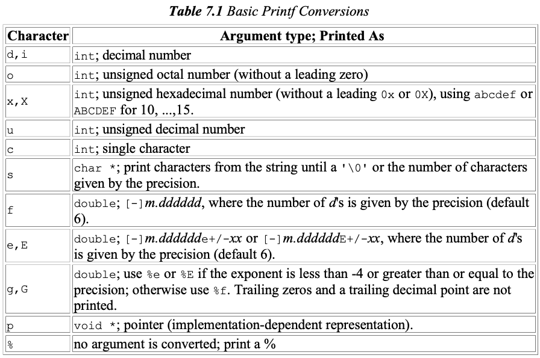
A width or precision may be specified as *, in which case the value is computed by converting the next argument (which must be an int).
For example, to print at most max characters from a string s,
printf("%.*s", max, s)
The function sprintf does the same conversion as printf does, but stores the output in a string:
int sprintf(char *string, char *format, arg1, arg2, ...);
sprintf formats the arguments in arg1, arg2, etc., according to format as before, but places the result in string instead of the standard output; string must be big enough to receive the result.
7.3 Variable-length Argument Lists
void minprintf(char *fmt, ...)
The tricky bit is how minprintf walks along the arguments list when the list doesn't even have a name. The standard header <stdarg.h> contains a set of macro definitions that define how to step through an argument list. The implementation of this header will vary from machine to machine, but the interface it presents is uniform.
#include <stdarg.h> /* minprintf: minimal printf with variable argument list */ void minprintf(char *fmt, ...) /* ... */ { va_list ap; /* point to each unnamed arg in turn */ char *p, *sval; int ival; double dval; va_start(ap, fmt); /* make ap point to 1st unnamed arg */ for (p = fmt; *p; p++) { if (*p != '%') { putchar(*p); /* no conversion */ continue; } /* Each call of va_arg returns one argument and steps ap to the next; va_arg uses a type name to determine what type to return and how big a step to take. */ switch (*++p) { /* conversion */ case 'd': ival = va_arg(ap, int); printf("%d", ival); break; case 'f': dval = va_arg(ap, double); printf("%f", dval); break; case 's': for (sval = va_arg(ap, char *); *sval; sval++) putchar(*sval); break; default: putchar(*p); break; } } va_end(ap); /* clean up when done */ }
7.4 Formatted Input -Scanf
int scanf(char *format, ...)
scanf reads characters from the standard input, interprets them according to the specification in format, and stores the results through the remaining arguments. The other arguments, each of which must be a pointer, indicate where the corresponding converted input should be stored. scanf stops when it exhausts its format string, or when some input fails to match the control specification. It returns as its value the number of successfully matched and assigned input items. On the end of the file, EOF is returned. The next call to scanf resumes searching immediately after the last character already converted.
int sscanf(char *string, char *format, arg1, arg2, ...)
It scans the string according to the format in format and stores the resulting values through arg1, arg2, etc. These arguments must be pointers.
White space characters are blank, tab, newline, carriage return, vertical, and formfeed.
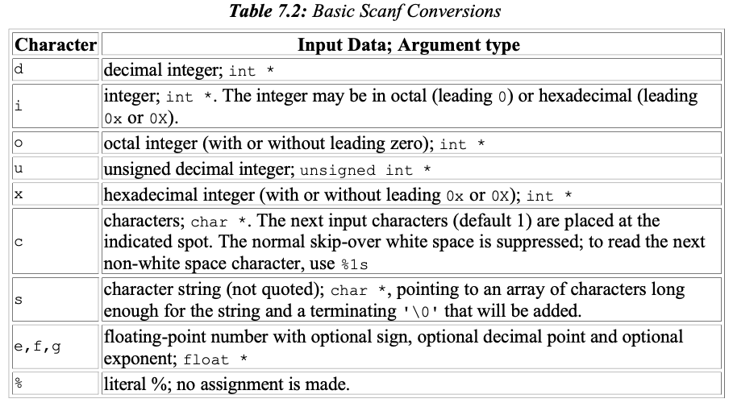
The conversion characters d, i, o, u, and x may be preceded by h to indicate that a pointer to short rather than int appears in the argument list, or by l to indicate that a pointer to long appears in the argument list.
#include <stdio.h> int main(void) { double sum, v; sum = 0; while(scanf("%lf", &v) == 1) printf("%\t%.2f\n", sum += v); return 0; }
scanf ignores blanks and tabs in its format string. Furthermore, it skips over white space as it looks for input values.
7.5 File Access
getchar, putchar, printf, sprintf, scanf, sscanf all read the standard input or write the standard output, which are automatically define for a program by the local operating system.
How to write a program to access a file that it not already connnected to the program?
For example:
cat x.c y.c
The rules are simple.
Before it can be read or written, a file has to be opened by the library function fopen. fopen takes an external name like x.c or y.c, does some houskeeping and negoriation with the operating system, and returns a pointer to be used in subsequent reads or writes of the file.
This pointer, called file pointer, points to a structure that contains information about the file, such as the location of a buffer, the current character position in the buffer, whether the file is being read or written, and whether errors or end of file have occurred. Users don't need to know the details, because the definitions obtained from <stdio.h> include a structure declaration called FILE. The only declaration needed for a file pointer is exemplified by
FILE *fp; FILE *fopen(char *name, char *mode);
This says that fp is a pointer to a FILE, and fopen returns a pointer to a FILE. FILE is type name, like int, not a structure tag; it is defined with typedef.
If a file that does not exist is opened for writing or appending, it is created if possible. Trying to read a file that does not exist is an error, and there may be other causes of error as well, like trying to read a file when you don't have permission. If there is any error, fopen will return NULL.
The next thing needed is a way to read or write the file once it is open.
int getc(FILE *fp)
getc returns the next character from the stream referred by fp; it returns EOF for end of file or error.
int putc(int c, FILE *fp)
putc writes the character c to the file fp and returns the character written, or EOF if an error occurs.
When a C program is started, the operating system environment is responsible for opening three files and providing pointers for them. These files are standard input, the standard output, and the standard error; the corresponding file pointers are called stdin, stdout, and stderr, and are declared in <stdio.h>. Normally stdin is connected to the keyboard and stdout and stderr are connected to the screen, but they may be redirected to files or pipes.
getchar and putchar can be defined in terms of getc, putc, stdin, and stdout as follows:
#define getchar() getc(stdin) #define putchar(c) putc((c), stdout)
For formatted input or output of files, the functions fscanf and fprintf may be used. These are identical to scanf and printf, except that the first argument is a file pointer that specifies the file to be read or written; the format string is the second argument.
int fscanf(FILE *fp, char *format, ...) int fprintf(FILE *fp, char *format, ...)
#include <stdio.h> /* cat: concatenate files, version 1 */ int main(int argc, char *argv[]) { FILE *fp; /* file pointer */ void filecopy(FILE *, FILE *); if (argc == 1) /* no args */ filecopy(stdin, stdout); else while (--argc > 0) if ((fp = fopen(*++argv, "r")) == NULL) { printf("cat: can't open %s\n", *argv); return 1; } else { filecopy(fp, stdout); fclose(fp); } return 0; } void filecopy(FILE *ifp, FILE *ofp) { int c; while ((c = getc(ifp)) != EOF) putc(c, ofp); }
The file pointers stdin and stdout are objects of type FILE *. They are constants, not variables, so it is not possible to assign to them.
Since most operating systems have some limit on the number of files that a program may have open simultaneously, it's a good idea to free the file pointers when they are no longer needed, as we did in cat. fclose is called automatically for each open file when a program terminates normally. (You can close stdin and stdout if they are not needed. They can also be reassigned by the library function freopen.)
7.6 Error Handling - Stderr and Exit
#include <stdio.h> /* cat: concatenate files, version 2 */ int main(int argc, char *argv[]) { FILE *fp; /* file pointer */ void filecopy(FILE *, FILE *); char *prog = argv[0]; /* program name for errors */ if (argc == 1) /* no args */ filecopy(stdin, stdout); else while (--argc > 0) if ((fp = fopen(*++argv, "r")) == NULL) { /* we include the program name in the message so if this program is used with others, the source of an error is identified. */ fprintf(stderr, "%s: can't open %s\n", prog, *argv); /* The argument of exit is available to whatever process called this one. */ exit(1); } else { filecopy(fp, stdout); fclose(fp); } if (ferror(stdout)) { fprintf(stderr, "%s: error writing stdout\n", prog); exit(2); } exit(0); } void filecopy(FILE *ifp, FILE *ofp) { int c; while ((c = getc(ifp)) != EOF) putc(c, ofp); }
The argument of exit is available to whatever process called this one, so the success or failure of the program can be tested by another program that uses this one as a sub-process. return expr is equivalent to exit(expr). exit has the advantage that it can be called from other functions, and that calls to it can be found with a pattern-searching program.
int ferror(FILE *fp)
return non-zero if an error occurred on the stream fp.
int feof(FILE *fp)
returns non-zero if end of file has occurred on the specified file.
7.7 Line Input and Output
char *fgets(char *line, int maxline, FILE *fp)
reads the next input line (including the newline) from file fp into the character array line; at most maxline-1 characters will be read. The resulting line is terminated with '\0'. Normally fgets returns line; on end of file or error it returns NULL.
int fputs(char *line, FILE *fp)
writes a string (which need not contain a newline) to a file. It return EOF if an error occurs, and non-negative otherwise.
The library functions gets and puts are similar to fgets and fputs, but operate on stdin and stdout. Confusingly, gets deletes the terminating '\n', and puts adds it.
SOURCE FILE:
/* fgets: get at most n chars from iop */ char *fgets(char *s, int n, FILE *iop) { register int c; register char *cs; cs = s; while(--n > 0 && (c = getc(iop)) != EOF) if ((*cs++ = c) == '\n') break; *cs = '\0'; return (c == EOF && cs == s) ? NULL : s; } /* fputs: put string s on file iop */ int fputs(char *s, FILE *iop) { int c; while (c = *s++) putc(c, iop); return ferror(iop) ? EOF : 0; }
7.8 Miscellaneous Functions
7.8.1 String Operations
<string.h>
| strcat(char *s, char *t) | concatenate t to end of s |
| strncat(char *s, char *t, int n) | concatenate n characters of t to end of s |
| strcmp(char *s, char *t) | return negative, zero or positive for s<t, s==t, s>t |
| strncmp(char *s, char *t, int n) | same as strcmp but only in first n characters |
| strcpy(char *s, char *t) | copy t to s |
| strncpy(char *s, char *t, int n) | copy at most n characters of t to s |
| strlen(char *s) | return length of s |
| strchr(char *s, int c) | return pointer to first c in s, or NULL if not present |
| strrchr(char *s, int c) | return pointer to last c in s, or NULL if not present |
7.8.2 Character Class Testing and Conversion
<ctype.h>
c is a int that can be represented as an unsigned char or EOF.
| int isalpha(int c) | non-zero if c is alphabetic, 0 if not |
| int isupper(int c) | non-zero if c is upper case, 0 if not |
| int islower(int c) | non-zero if c is lower case, 0 if not |
| int isdigit(int c) | non-zero if c is digit, 0 if not |
| int isalnum(int c) | non-zero if c isalpha(c) or isdigit(c), 0 if not |
| int isspace(int c) | non-zero if c is blank, tab, newline, return, formfeed, vertical tab |
| int toupper(int c) | return c converted to upper case |
| int tolower(int c) | return c converted to lower case |
7.8.3 Ungetc
int ungetc(int c, FILE *fp)
pushes the character c back onto file fp, and returns either c or EOF for an error. Only one character of pushback is guaranteed per file.
7.8.4 Command Execution
int system(char *)
executes the command contained in the character string s, then resumes execution of the current program.
system("date");
causes the program date to be run; it prints the data and time of day on the standard output. system returns a system-dependent integer status from the command executed. In the UNIX system, the status return is the value returned by exit.
7.8.5 Storage Manegement
The function malloc and calloc obtain blocks of memory dynamically.
void *malloc(size_t n)
returns a pointer to n bytes of uninitialized storage, or NULL if the request cannot be satisfied.
void *calloc(size_t n, size_t size)
returns a pointer to enough free space for an array of n objects of the specified size, or NULL if the request cannot be satisfied. The storage is initialized to zero.
The pointer returned by malloc or calloc has the proper alignment for the object in question, but it must be cast into the appropriate types, as in
int *ip; ip = (int *) calloc(n, sizeof(int));
void free(void *ptr)
frees the space pointed to by ptr, where ptr was originally obtained by a call to malloc or calloc. There are no restrictions on the order in which space is freed, but it is a ghastly error to free something not obtained by calling malloc or calloc.
It is also an error to use something after it has been freed. A typical but incorrect piece of code is this loop that frees items from a list:
for (p = head; p != NULL; p = p->next) /* WRONG */ free(p);
The right way is to save whatever is needed before freeing
for (p = head; p != NULL; p = q) { q = p->next; free(p); }
7.8.6 Mathematical Functions
<math.h>
| double sin(doube x) | sine of x, x in radians |
| double cos(double x) | |
| double atan(double y, double x) | arctangent of y/x, in radians |
| double exp(double x) | exponential function \(e^x\) |
| double log(double x) | natural (base e) logarithm of x |
| double log10(double x) | |
| double pow(double x, double y) | \(x^y\) |
| double sqrt(double x) | |
| double fabs(double x) | absolute value of x |
7.8.7 Random Number Generation
// <stdlib.h> int rand(void)
computes a sequence of pseudo-random integers in the range zero to RAND_MAX.
To produce random floating-point numbers greater than or equal to zero but less than one:
// if your library does not provides the function. #define frand() ((double) rand() / (RAND_MAX+1.0))
void srand(unsigned int seed)
sets the seed for rand.
8 The UNIX System Interface
The UNIX operating system provides its services through a set of system calls, which are in effect functions within the operating system that may be called by user programs.
8.1 File Descriptors
In the UNIX operating system, all input and output is done by reading or writing files, because all peripheral devices, even keyboard and screen, are files in the file system. This means that a single homogeneous interface handles all communication between a program and peripheral devices.
In the most general case, before you read and write a file, you must inform the system of your intent to do so, a process called opening the file. The system checks your right to do so and if all is well, returns to the program a small non-negative integer called a file descriptor. Whenever input or output is to be done on the file, the file descriptor is used instead of the name to identify the file. All information about an open file is maintained by the system; the user program refers to the file only by the file descriptor.
Since input and output involving keyboard and screen is so common, special arrangements exist to make this convenient. When the command interpreter (the ``shell'') runs a program, three files are open, with file descriptors 0, 1, and 2, called the standard input, the standard output, and the standard error. If a program reads 0 and writes 1 and 2, it can do input and output without worrying about opening files.
The user of a program can redirect I/O to and from files with < and >:
prog < file > outfile
In this case, the shell changes the default assignments for the file descriptors 0 and 1 to the named files. Normally file descriptor 2 remains attached to the screen, so error messages can go there. Similar observations hold for input or output associated with a pipe. In all cases, the file assignments are changed by the shell, not by the program. The program does not know where its input comes from nor where its output goes, so long as it uses file 0 for input and 1 and 2 for output.
8.2 Low Level I/O - Read and Write
Input and output uses the read and write system calls, which are accessed from C programs through two functions called read and write.
int n_read = read(int fd, char *buf, int n); int n_written = write(int fd, char *buf, int n);
The first argument is a file descriptor. The second argument is a character array in your program where the data is to go to or come from. The third argument is the number of bytes to be transferred. Each call returns a count of the number of bytes tranferred. On reading, the number of bytes returned may be less than the number requested. A return value of zero bytes implies end of file, and -1 indicates an error of some sort. For writing, the return value is the number of bytes written; an error has occurred if this isn't equal to the number requested.
#include "syscalls.h" int main(void) /* copy input to output */ { char buf[BUFSIZ]; int n; while ((n = read(0, buf, BUFSIZ)) > 0) write(1, buf, n); return 0; }
#include "syscalls.h" /* getchar: unbuffered single character input */ int getchar(void) { char c; return (read(0, &c, 1) == 1) ? (unsigned char) c : EOF; }
#include "syscalls.h" /* getchar: simple buffered version */ int getchar(void) { static char buf[BUFSIZ]; static char *bufp = buf; static int n = 0; if (n == 0) { /* buffer is empty */ n = read(0, buf, sizeof buf); bufp = buf; } return (--n >= 0) ? (unsigned char) *bufp++ : EOF; /* bufp++, continue the reading. */ /* --n: '\0' */ }
8.3 Open, Create, Close, Unlink
Other than the default standard input, output and error, you must explicitly open files in order to read or write them. There are two system calls for this, open and creat.
open is rather like the fopen, except that instead of returning a file pointer, it returns a file descriptor, which is just an int. open returns -1 if any error occurs.
#include <fcntl.h> int fd; int open(char *name, int flags, int perms); fd = open(name, flags, perms);
As with fopen, the name argument is a character string containing the filename. The second argument, flags, is an int that specifies how the file is to be opened; the main values are
- O_RDONLY
- open for reading only
- O_WRONLY
- open for writting only
- O_RDWR
- open for both reading and writing
These constants are defined in <fcntl.h> on System V UNIX systems, and in <sys/file.h> on Berkeley(BSD) versions.
fd = open(name, O_RDONLY, 0);
The perms argument is always zero for the uses of open.
It is an error to try to open a file that does not exist. The system call creat is provided to create new files, or to re-write old ones.
int creat(char *name, int perms); fd = creat(name, perms);
returns a file descriptor if it was able to create the file, and -1 if not. If the file already exists, creat will truncate it to zero length, thereby discarding its previous contents; it is not an error to creat a file that already exists.
If the file does not already exist, creat creates it with the permissions specified by the perms argument.
#include <stdio.h> #include <fcntl.h> #include "syscalls.h" #define PERMS 0666 /* RW for owner, group, others */ void error(char *, ...); /* cp: copy f1 to f2 */ int main(int argc, char *argv[]) { int f1, f2, n; char buf[BUFSIZ]; if (argc != 3) error("Usage: cp from to"); if ((f1 = open(argv[1], O_RDONLY, 0)) == -1) error("cp: can't open %s", argv[1]); if ((f2 = creat(argv[2], PERMS)) == -1) error("cp: can't create %s, mode %03o", argv[2], PERMS); while ((n = read(f1, buf, BUFSIZ)) > 0) if (write(f2, buf, n) != n) error("cp: write error on file %s", argv[2]); return 0; }
#include <stdio.h> #include <stdarg.h> /* error: print an error message and die */ void error(char *fmt, ...) { va_list args; va_start(args, fmt); fprintf(stderr, "error: "); vprintf(stderr, fmt, args); fprintf(stderr, "\n"); va_end(args); exit(1); }
There is a limit (often about 20) on the number of files that a program may open simultaneously. Accordingly, any program that intends to process many files must be prepared to re-use file descriptors. The function close(int fd) breaks the connection between a file descriptor and an open file, and frees the file descriptor for use with some other file; it corresponds to fclose in the standard library except that there is no buffer to flush. Termination of a program via exit or return from the main program closes all open files.
The function unlink(char *name) removes the file name from the file system. It corresponds to the standard library function remove.
8.4 Random Access -Lseek
Input and output are normally sequential: each read or write takes place at a position in the file right after the previous one. When necessary, however, a file can be read or written in any arbitrary order. The system call lseek provides a way to move around in a file without reading or writing any data:
long lseek(int fd, long offset, int origin);
sets the current position in the file whose descriptor is fd to offset, which is taken relative to the location specified by origin. Subsequent reading and writing will begin at that position. origin can be 0, 1, or 2 to specify that offset is to be measured from the beginning, from the current position, or from the end of the file respectively.
To append to a file (the redirection >> in the UNIX shell, or "a" for fopen), seek to the end before writing:
lseek(fd, 0L, 2);
To get back to the beginning:
lseek(fd, 0L, 0);
With lseek, it is possible to treat files more or less like arrays, at the price of slower access.
#include "syscalls.h" /* get: read n byptes from position pos */ int get(int fd, long pos, char *buf, int n) { if (lseek(fd, pos, 0) >= 0) /* get to pos */ return read(fd, buf, n); else return -1; }
The standard library function fseek
int fseek(FILE *fp, long offset, int origin);
is similar to lseek except that the first argument is a FILE * and the return is non-zero if an error occurred.
8.5 Example - An Implementation of fopen
/* Names that are intended for use only by functions of the library begin with an underscore so thay are less likely to conclide with names in a user's program. This convetion is used by all standard library routines. */ #define NULL 0 #define EOF (-1) #define BUFSIZ 1024 #define OPEN_MAX 20 /* max #files open at once */ typedef struct _iobuf { int cnt; /* characters left */ char *ptr; /* next character position */ char *base; /* location of buffer */ int flag; /* mode of file access */ int fd; /* file descriptor */ } FILE; extern FILE _iob[OPEN_MAX]; /* input output buffer */ #define stdin (&_iob[0]) #define stdout (&_iob[1]) #define stderr (&_iob[2]) enum _flags { _READ = 01, /* file open for reading */ _WRITE = 02, /* file open for writing */ _UNBUF = 04, /* file is unbuffered */ _EOF = 010, /* EOF has occurred on this file */ _ERR = 020 /* error occurred on this file */ }; int _fillbuf(FILE *); int _flushbuf(int, FILE *); #define feof(p) ((p)->flag & _EOF) != 0) #define ferror(p) ((p)->flag & _ERR != 0) #define fileno(p) ((p)->fd) /* if there are still characters to be read, get one character more */ #define getc(p) (--(p)->cnt >= 0 ? (unsigned char) *(p)->ptr++ : _fillbuf(p)) /* if there are still character to be written, put one character more */ #define putc(x,p) (--(p)->cnt >= 0 ? *(p)->ptr++ = (x) : _flushbuf((x),p)) #define getchar() getc(stdin) #define putchar(x) putc((x), stdout) #include <fcntl.h> #include "syscalls.h" #define PERMS 0666 FILE *fopen(char *name, char *mode) { int fd; FILE *fp; if (*mode != 'r' && *mode != 'w' && *mode != 'a') return NULL; for (fp = _iob; fp < _iob + OPEN_MAX; fp++) if ((fp->flag & (_READ | _WRITE)) == 0) break; /* found free slot */ if (fp >= _iob + OPEN_MAX) /* no free slots */ return NULL; if (*mode == 'w') fd = creat(name, PERMS); else if (*mode == 'a') { if ((fd = open(name, O_WRONLY, 0)) == -1) fd = creat(name, PERMS); lseek(fd, 0L, 2); } else fd = open(name, O_RDONLY, 0); if (fd == -1) /* couldn't access name */ reutrn NULL; fp->fd = fd; fp->cnt = 0; fp->base = NULL; fp->flag = (*mode == 'r') ? _READ : _WRITE; return fp; }
#include "syscalls.h" /* _fillbuf: allocate and fill input buffer */ int _fillbuf(FILE *fp) { int bufsize; if ((fp->flag & (_READ | _EOF_ERR)) != _READ) /* end of file */ return EOF; bufsize = (fp->flag & _UNBUF) ? 1 : BUFSIZ; /* buffered or not */ fp->ptr = fp->base; /* point to the location of buffer */ /* read bufsize bytes and update the count */ fp->cnt = read(fp->fd, fp->ptr, bufsize); if (--fp->cnt < 0) { /* if there are no characters left to read */ if (fp->cnt == -1) /* end of file */ fp->flag |= _EOF; else /* error */ fp->flag |= _ERR; fp->cnt = 0; /* no more character to read */ return EOF; } return (unsigned char) *fp->ptr++; /* return the next character */ } FILE _iob[OPEN_MAX] = { /* count, ptr, base, flag, fd */ { 0, (char *) 0, (char *) 0, _READ, 0 }, { 0, (char *) 0, (char *) 0, _WRITE, 1 }, { 0, (char *) 0, (char *) 0, _WRITE | _UNBUF, 2 } };
8.6 Example - Listing Directories
In the UNIX file system, a directory is a file that constains a list of filenames and some indication of where they are located. The "location" is an index into another table called the "inode list". The inode for a file is where all information about the file except its name is kept. A directory entry generally consists of only two items, the filename and an inode number.
dirent.h:
#define NAME_MAX 14 /* longest filename component; system-dependent */ typedef struct { /* portable directory entry */ long ino; /* inode number */ char name[NAME_MAX+1]; /* name + '\0' terminator */ } Dirent; typedef struct { int fd; /* file descriptor for the directory */ Dirent d; /* the directory entry */ } DIR; DIR *opendir(char *dirname); Dirent *readdir(DIR *dfd); void closedir(DIR *dfd);
The system call stat takes a filename and returns all of the information in the inode for that file or -1 if there is an error.
struct stat { /* inode information returned by stat */ dev_t st_dev; /* device of inode */ ino_t st_ino; /* inode number */ short st_mode; /* mode bits */ short st_nlink; /* number of links to file */ short st_uid; /* owners user id */ short st_gid; /* owners group id */ dev_t st_rdev; /* for special files */ off_t st_size; /* file size in characters */ time_t st_atime; /* time last accessed */ time_t st_mtime; /* time last modified */ time_t st_ctime; /* time originally created */ };
The types like dev_t and ino_t are defined in <sys/types.h>, which must be include too.
#define S_IFMT #define S_IFDIR #define S_IFCHR #define S_IFBLK #define S_IFREG 0160000 /* type of file: */ 0040000 /* directory */ 0020000 /* character special */ 0060000 /* block special */ 0010000 /* regular */ /* ... */
fsize.c:
/* fsize is a special form of ls that prints the sizes of all files named in its commandline argument list. If one of the files is a directory, fsize applies itself recursively to that directory. If there are no arguments at all, it processes the current directory. */ #include <stdio.h> #include <string.h> #include "syscalls.h" #include <fcntl.h> /* flags for read and write */ #include <sys/types.h> /* typedefs */ #include <sys/stat.h> /* structure returned by stat */ #include "dirent.h" void fsize(char *); /* print file names */ int main(int argc, char **argv) { if (argc == 1) /* default: current directory */ fsize("."); else while (--argc > 0) fize(*++argv); return 0; } int stat(char *, struct stat *); void dirwalk(char *, void (*fcn)(char *)); /* fsize: print the name of file "name" */ void fsize(char *name) { struct stat stbuf; if (stat(name, &stbuf) == -1) { fprintf(stderr, "fsize: can't access %s\n", name); return; } if ((stbuf.st_mode & S_IFMT) == S_IFDIR) /* directory */ dirwalk(name, fsize); printf("%8ld %s\n", stbuf.st_size, name); } #define MAX_PATH 1024 /* dirwalk: apply fcn to call files in dir */ void dirwalk(char *dir, void (*fcn)(char *)) { char name[MAX_PATH]; Dirent *dp; /* directory pointer */ DIR *dfd; /* try to open, if success, continue, or return if fail */ if ((dfd = opendir(dir)) == NULL) { fprintf(stderr, "dirwalk: can't open %s\n", dir); return; } while ((dp = readdir(dfd)) != NULL) { if (strcmp(dp->name, ".") == 0 || strcmp(dp->name, "..")) continue; /* skip self and parent */ /* dirrectory length + filename length + two '\0' */ if (strlen(dir) + strlen(dp->name) + 2 > sizeof(name)) fprintf(stderr, "dirwalk: name %s %s too long\n", dir, dir->name); else { sprintf(name, "%s/%s", dir, dp->name); (*fcn)(name); } } closedir(fdf); }
dir.c:
/* Version & and System V UNIX */ #include <sys/types.h> #ifndef DIRSIZ #define DIRSIZ 14 #endif struct direct { /* directory entry */ ino_t d_ino; /* inode number */ char d_name[DIRSIZ]; /* long name does not have '\0' */ }; int fstat(int fd, struct stat *); /* opendir: open a directory for readdir calls */ DIR *opendir(char *dirname) { int fd; strcut stat stbuf; DIR *dp; if ((fd = open(dirname, O_RDONLY, 0)) == -1 || /* can read */ fstat(fd, &stbuf) == -1 || (stbuf.st_mode & S_IFMT) != S_IFDIR || /* directory */ (dp = (DIR *) malloc(sizeof(DIR))) == NULL) /* enought storage to allocate */ return NULL; dp->fd = fd; return dp; } /* closedir: close directory opened by opendir */ void closedir(DIR *dp) { if (dp) { close(dp->fd); free(dp); } } #include <sys/dir.h> /* local directory structure */ /* readdir: read directory entries in sequence */ Dirent *readdir(DIR *dp) { struct direct dirbuf; /* local directory structure */ static Dirent d; /* return: portable structure */ while (read(dp->fd, (char *) &dirbuf, sizeof(dirbuf)) == sizeof(dirbuf)) { if (dirbuf.d_ino == 0) /* slot not in use, the file has been deleted */ continue; d.ino = dirbuf.d_ino; strncpy(d.name, dirbuf.d_name, DIRSIZ); d.name[DIRSIZ] = '\0'; /* ensure termination */ return &d; } return NULL; }
8.7 Example - A Storage Allocator
Rather than allocating from a compiled-in fixed-size array, malloc will request space from the operating system as needed. Since othe activities in the program may also request space without calling this allocator, the space that malloc manages may not be contiguous. Thus its free storage is kept as a list of free blocks. Each block contains a size, a pointer to the next block, and the space itself. The blocks are kept in order of increasing storage address, and the last block (hightest address) points to the first.
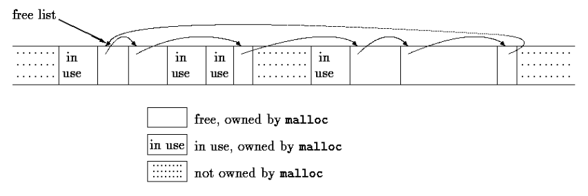
When a request is made, the free list is scanned until a big-enough block is found. This algorithm is called ``first fit,'' by contrast with ``best fit,'' which looks for the smallest block that will satisfy the request. If the block is exactly the size requested it is unlinked from the list and returned to the user. If the block is too big, it is split, and the proper amount is returned to the user while the residue remains on the free list. If no big-enough block is found, another large chunk is obtained by the operating system and linked into the free list.
Freeing also causes a search of the free list, to find the proper place to insert the block being freed. If the block being freed is adjacent to a free block on either side, it is coalesced with it into a single bigger block, so storage does not become too fragmented. Determining the adjacency is easy because the free list is maintained in order of decreasing address.
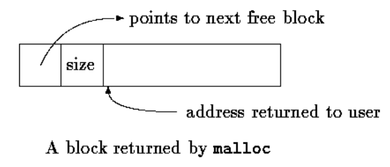
A free block contains a pointer to the next block in the chain, a record of the size of the block, and then the free space itself; the control information at the beginning is called the ``header.'' To simplify alignment, all blocks are multiples of the header size, and the header is aligned properly. This is achieved by a union that contains the desired header structure and an instance of the most restrictive alignment type.
typedef long Align; /* for alignment to long boundary */ union header { struct { union header *ptr; /* next block if on free list */ unsigned size; /* size of this block */ } s; Align x; /* force alignment of blocks */ }; /* The Align filed is never used; it just forces each header to be aligned on a worst-case boundary. */
The variable base is used to get started. If freep is NULL, as it is at the first call of malloc, then a degenerate free list is created; it constains one block of size zero, and pointers to itself. In any case, the free list is then searched. The search for a free block of adequate size begins at the point (freep) where the last block was found; this strategy helps keep the list homogeneous. If a too-big block is found, the tail end is returned to the user; in this way the header of the original needs only to have size adjusted. In all cases, the pointer returned to the user points to the free space within the block, which begins one unit beyond the header.
static Header base; /* empty list to get started */ static Header *freep = NULL; /* start of free list */ /* malloc: general-purpose storage allocator */ void *malloc(unsigned nbytes) { Header *p, *prevp; Header *morecore(unsigned); /* obtains storeage from the operating system */ unsigned nunits; nunits = (nbytes + sizeof(Header) - 1) / sizeof(header) + 1; if ((prevp == freep) == NULL) { /* no free list yet */ base.s.ptr = freeptr = prevptr = &base; base.s.size = 0; } for (p = prevp->s.ptr; ; prevp = p, p = p->s.ptr) { /* search */ if (p->s.size >= nunits) { /* big enough */ if (p->s.size == nunits) /* exactly equal */ prevp->s.ptr = p->s.ptr; else { /* allocate tail end */ p->s.size -= nunits; /* nunits has be allocated, so the free block size decrease */ p += p->s.size; /* tail end pointer */ p->s.size = nunits; /* allocated size */ } freep = prevp; /* free from this position (allocated by malloc) */ return (void *) (p+1); } if (p == freep) /* wrapped around free list */ if ((p = morecore(nunits)) == NULL) return NULL; /* none left */ } } #define NALLOC 1024 /* minimum #units to request */ /* morecore: ask system for more memory */ static Header *morecore(unsigned nu) { char *cp, *sbrk(int); Header *up; if (nu < NALLOC) nu = NALLOC; /* The UNIX system call sbrk(n) returns a pointer to n more bytes of storage. * sbrk returns -1 if there was no space, even though NULL could have been a better design. * The -1 must be cast to char * so it can be compared with the return value. */ cp = sbrk(nu * sizeof(Header)); /* request how may memory */ if (cp == (char *) -1) /* no space at all */ return NULL; up = (Header *) cp; up->s.size = nu; free((void *) (up+1)); return freep; } /* free: put block ap in free list */ void free(void *ap) { Header *bp, *p; bp = (Header *) ap - 1; /* point to block header */ for (p = freep; !(bp > p && bp < p->s.ptr); p = p->s.ptr) if (p >= p->s.ptr && (bp > p || bp < p->s.ptr)) break; /* freed block at start or end of arena */ if (bp + bp->size == p->s.ptr) { /* join to upper neighbor */ bp->s.size += p->s.ptr->s.size; bp->s.ptr = p->s.ptr->s.ptr; } else bp->s.ptr = p->s.ptr; if (p + p->size == bp) { /* join to lower neighbor */ p->s.size += bp->s.size; p->s.ptr = bp->s.ptr; } else p->s.ptr = bp; freep = p; }
Hint:
Although storage allocation is intrinsically machine-dependent, the code above illustrates how the machine dependencies can be controlled and confined to a very small part of the program. The use of typedef and union handles alignment (given that sbrk supplies an appropriate pointer). Casts arrange that pointer conversions are made explicit, and even cope with a badly- designed system interface. Even though the details here are related to storage allocation, the general approach is applicable to other situations as well.